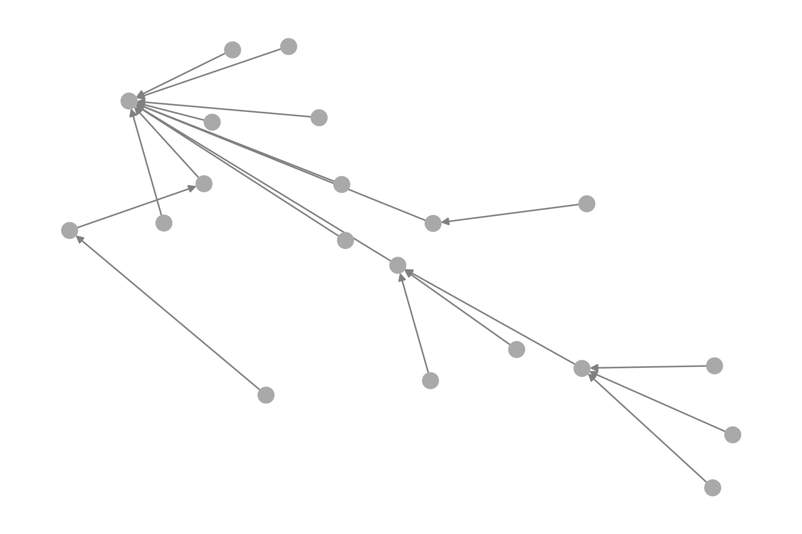
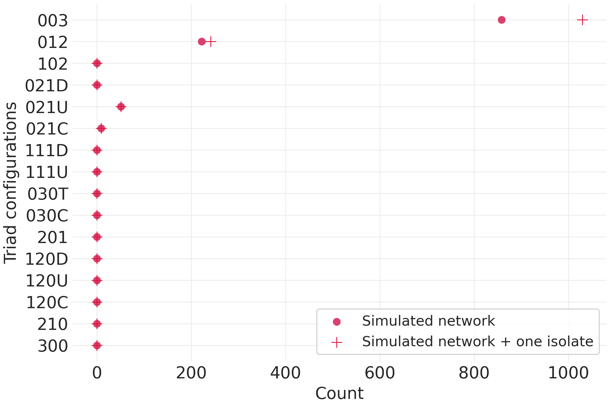
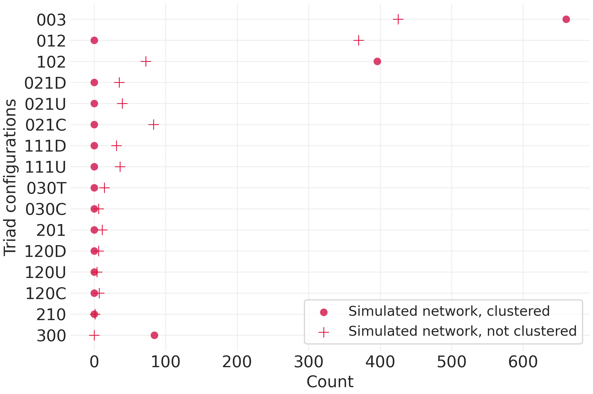
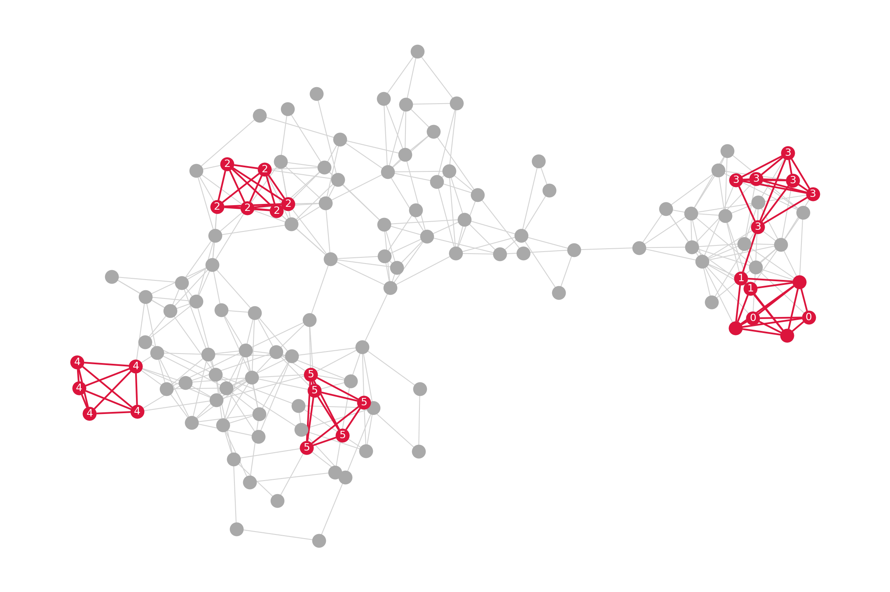
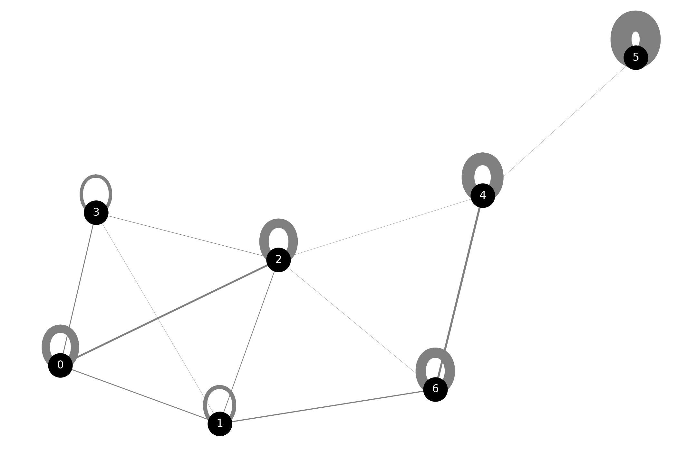
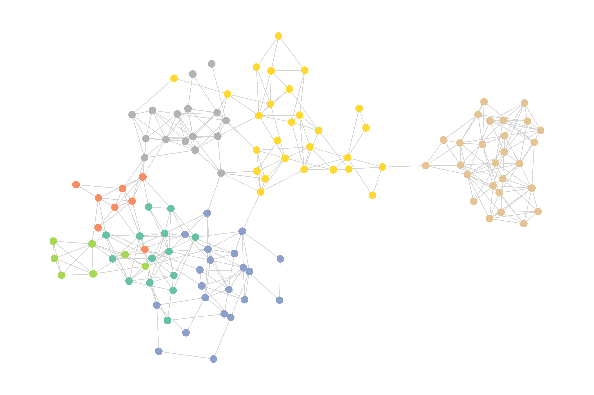
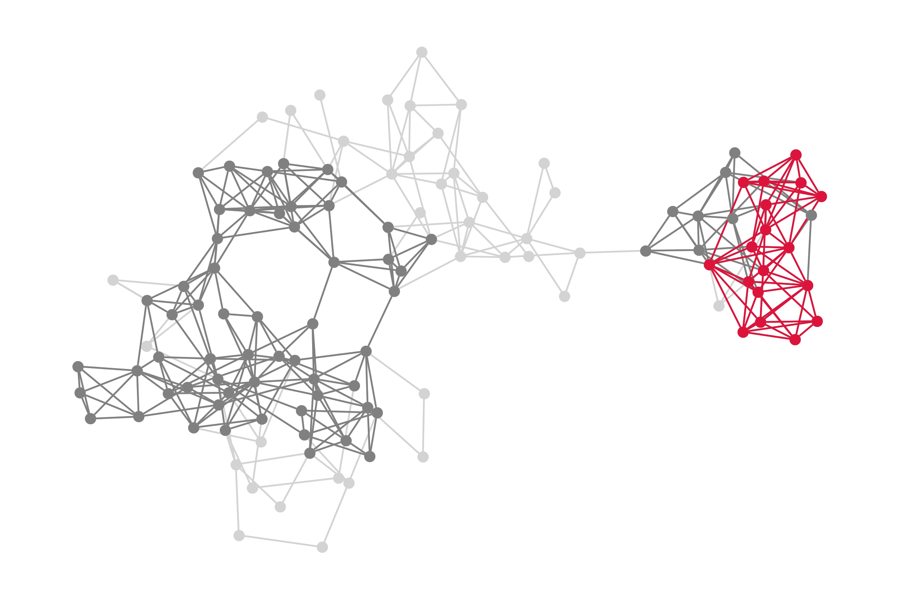

14 Structural similarity and latent social space
This chapter is being revised in fall 2024. The revised version will serve as a general networks EDA chapter, which often involves plotting networks, performing some sort of community detection to reduce a complex network, and some kind of centrality analysis. In the worst case, these are done naively and / or mindlessly. Since centrality analysis was introduced in the previous chapter, this chapter will focus on visualization and community detection.
It will use the political blogs example (graph-tool) to introduce visualization and force-directed layouts, as well as crique mindless application of modularity-maximization approaches to community detection. It will introduce assortative and positional structure and contrast the two approaches to partitioning networks. It will apply a first SBM but won’t get into posterior inference (yet). It will end with the idea of latent social space and feature a short section on latent position models (which dovetail nicely with the other chapters in this section that use dimensionality reduction methods).
For now, this chapter contains several chapters back to back. They will be consolidated shortly (as in over the next few days).
15 Network Analysis with Graph-Tool (Political Blogs Network)
15.1 Setup
import numpy as np
import graph_tool.all as gt
import matplotlib as mpl
from icsspy.networks import rotate_positions
print(f'Using graph-tool version {gt.__version__}')Load the data.
g = gt.collection.data["polblogs"]
print(g)print(g.gp.readme)15.2 Property Maps
type(g.vp.value)We can look up the political class for any given node by passing its integer ID. For example, vertex 30:
g.vp.value[30]To view all classifications, we can iterate over the vertices and print each vertex ID followed by its class label:
for v in g.vertices():
print(v, g.vp.value[v])political_colors = {0: "#2F357E", 1: "#D72F32"} # color map
vertex_political_colors = g.new_vertex_property("string") # new vertex property
# assign colors to each vertex based on the political classification
for v in g.vertices():
vertex_political_colors[v] = political_colors[g.vp.value[v]]As a first step, let’s recreate the political blogs figures we’ve seen so far (including those based on the nested SBM). We’ll assign node positions using the stable force directed placement function, sfdp_layout(). This will more-or-less recreate the force directed layout from the original.
pos = gt.sfdp_layout(g)
gt.graph_draw(
g, pos,
vertex_fill_color=vertex_political_colors,
output_size=(1200, 1200),
bg_color=[1, 1, 1, 1], # white background (transparent by default)
inline=True
)Let’s just focus on the giant component for a cleaner visualization. We’ll also rotate the graph’s position to match the figures more closely.
giant = gt.extract_largest_component(g, directed=True)
pos = gt.sfdp_layout(giant)
pos = rotate_positions(pos, a=90)
gt.graph_draw(
giant, pos,
vertex_fill_color=vertex_political_colors,
output_size=(1200, 1200),
bg_color=[1, 1, 1, 1],
inline=True
)Next, we fit an SBM and color the nodes based on their estimated block membership.
blockstate = gt.minimize_nested_blockmodel_dl(giant)
blockstate_level_0 = blockstate.levels[0]
blockstate_level_0We can use the .draw() method for blockstate objects.
blockstate_level_0.draw(
pos=pos,
output_size=(1200, 1200),
bg_color=[1, 1, 1, 1],
)Another figure more-or-less recreated! Two more to go.
Let’s modify the force directed layout to add attractive forces for block membership.
pos_refined = gt.sfdp_layout(g, groups=blockstate_level_0.b, gamma=.04)
pos_refined = rotate_positions(pos_refined, 125) # make it horizontalThen we can visualize the blockstate again.
blockstate_level_0.draw(
pos=pos_refined,
edge_gradient=[],
edge_color="#33333322",
output_size=(1200, 1200),
bg_color=[1, 1, 1, 1],
)As a refinement step based on model criticism, we’ll adjust the force-directed layout by adding an attractive force between nodes in the same block. This is done by passing the following arguments to sfdp_layout():
groups: A vertex property map that assigns nodes to specific groups, in this case, block assignments at the lowest level of the nested SBM (blockstate_level_0.b). This adds additional attractive forces for block membership in the layout.gamma: Controls the strength of the attractive force for nodes in the same block. A small value corresponds to a weak force and more spread out clusters, while a larger value results in more compact clusters.
We’ll pass blockstate_level_0.b (block assignments) to sfdp_layout(). The .b attribute provides access to the block assignments.
pos_refined = rotate_positions(pos_refined, 45)😌 Look at that!
15.2.1 Adjusting Node Colors & Exploring Hierarchy
For the final adjustment, let’s assign node colors based on political classification rather than block membership and use a layout that is designed to emphasize the hierarchical structure of the network. Even though we are dropping back down to two colors, the block structure will still be evident from the layout and we should be able to how well the binary classification lines up with the hierarchical blockmodel.
15.2.2 Divided They Blog?
What do you think?
blockstate.draw(
vertex_fill_color=vertex_political_colors,
output_size=(1200, 1200),
bg_color=[1, 1, 1, 1],
inline=True,
)This visualization reveals the hierarchical structure more clearly. It’s a bit tough to see right now, but the blue square node right in the middle of the network represents the entire graph merged into one group at the highest level of the block hierarchy. As you move outward from the center, the graph splits into smaller and smaller blocks, which correspond to different political blogs at the lowest level of the block hierarchy.
You may notice that the nested SBM reveals a more complex structure than a simple left-right division. The hierarchy shows internal differentiation within each political cluster, revealing sub-communities that were not as apparent in the force-directed layout. However, we can see a clear split into two groups at the highest-level below the full graph that does align with the binary classifications.
15.2.3 Divided They Blog?
Let’s tweak the appearance of the block-level graph to make it easier to see and more visually appealing. We will modify the properties of the hierarchical block nodes and edges using hvprops (hierarchical vertex properties) and heprops (hierarchical edge properties).
hvprops = {
"fill_color": "white",
"size": 30,
}
heprops = {
"color": "white",
"pen_width": 2,
}
blockstate.draw(
vertex_fill_color=vertex_political_colors,
hvprops=hvprops,
heprops=heprops,
output_size=(1200, 1200),
bg_color=[1, 1, 1, 1],
inline=True,
)With that, we’ve successfully recreated the series of political blog network figures from the lecture using graph-tool. We learned how to run graph-tool code in a conda environment, extracted the giant component, fit our first nested Stochastic Blockmodel (NSBM), and created a series of visualizions of the network and it’s hierarchical block structure. We also learned how to adjust force_directed layouts to add additional attractors for group memberships based on simple model criticism, and how to modify and refine the visual properties of networks at different levels of the block hierarchy.
In the next part of the tutorial, we’ll explore the Enron email networks, applying similar techniques and deepening our understanding of community detection in large networks. We’ll fit different kinds of models to different kinds of network representations and then rank the models based on their description lengths. As a bonus, we will compare these to results from modularity-maximization approaches (which you should not use).
We just
- recreated the figures
- fit and visualized our first Nested Stochastic Blockmodel
- learned how to modify the observed and hierachical networks in
graph-toolvisualizations
16 Generative Network Analysis with Bayesian Stochastic Blockmodels
16.1 LEARNING OUTCOMES
- Explain how stochastic equivalence builds upon, yet is distinct from, structural equivalence
- Describe the Bayesian logic of Stochastic BlockModels (SBMs) and how they aggregate nodes into stochastically equivalent blocks
- Use
graph-toolto produce posterior distributions of nodes in hierarchically nested blocks - Understand how TopSBM unifies SBMs and LDA models
16.2 LEARNING MATERIALS
You can find the online learning materials for this chapter in doing_computational_social_science/Chapter_31. cd into the directory and launch your Jupyter Server.
16.3 INTRODUCTION
In the previous chapter, we used Bayesian generative models to identify latent topic structure in text data. In this chapter, we use the same underlying Bayesian logic to tackle some difficult problems in network analysis. Just as LDA addresses topic modelling as a latent variable problem using generative models, the models we introduce here – stochastic block models (SBMs) – approach network structure a similar way. Whereas LDA assumes that documents contain a mixture of latent topics that are made up of words, SBMs assume that networks have latent modular structure, and the goal is to figure out how to partition a network according to these low-level building blocks.
I’ll start by briefly introducing some new theoretical ideas about “equivalence” and structural positions in networks. Then, I’ll emphasize the theoretical and the generative logic of SBMs and their hierarchical Bayesian design. Then I’ll discuss the role of Bayesian inference in SBMs, following a similar explanatory process as in the previous chapter.
In the second half of the chapter, we’ll focus on three related things. First, I’ll introduce the Python package graph-tool. Second, we will fit a series of SBMs to an email communication network of Enron employees involved in the legal proceedings of the Enron scandal. Third and finally, we will return to the comparison of LDA and SBM. I’ll emphasize the shared conceptual logic of the problems of topic modelling and community detection. Then I’ll introduce TopSBMs as a shared modelling framework for both tasks. This combination marks the end of our journey through Bayesian generative modelling and probabilistic programming.
16.3.1 Latent Network Structure: Connected Communities and Structural Positions
Generally speaking, network researchers think about the structure of social networks in one of two ways, each of which posits different social mechanisms to produce an outcome of interest (such as whether someone adopts a belief or behaviour), or give rise to different kinds of patterns in network structure. Both perspectives subsume a wide variety of specific methods, measures, and models.
The first of these two perspectives focuses mainly on issues related to connection, cohesion, and network flow. We work within this general perspective anytime we are thinking through the processes by which ties and cohesive subgroups form and dissolve, or when concerned with the role of networks in facilitating or mitigating the spread of a contagion or the creation of opportunities from one’s direct ties or the structure of ties in their neighbourhood. Everything we have discussed in relation to networks to this point in the book has assumed this general perspective. Because of the role of direct connection and walk-structure, research that adopts this perspective measures and models specific relationships between specific nodes.
By contrast, positional approaches are premised on the notion that we can reduce the complexity of networks that represent specific relationships between specific nodes to a smaller set of connections between blocks (i.e., groups) of nodes that are judged to be “equivalent” in some meaningful way. In other words, each “block” in a network consists of a group of structurally interchangeable nodes, each of which share a common structural position in the network. The research goals here focus on understanding the general relationships between general structural positions rather than understanding the specific connections between specific people.
Why would we care to do this in the first place? It depends on whom you ask, but you a common motivation for working with this positional approach is generalization: we want to abstract away the concrete details of specific connections between specific people to focus on understanding the big picture, in general. As we will soon see, this way of thinking lends itself well to probabilistic models of network structure, and is more robust to problems that arise from the imprecise and imperfect observation and measurement of relational data.
Let’s imagine a simple scenario. Imagine two professors, each principal investigators of research labs at a university but in completely different departments and with no overlap in their research agendas or lab members. Let’s also assume that both labs have a fairly hierarchical organizational structure, as is historically typical of many sciences. In both cases, the professors have a group of students and lab technicians who report directly to them. Regardless of how we measure relevant network ties (e.g., communication, collaboration, advice-giving), the community detection we methods we discussed in Chapter 15 would place both professors into different communities. From a connection, community, and flow perspective, these two professors and their labs are completely distinct, with the only relationships between them being indirect connections along the walk structure of the network. By contrast, the models we’re going to discuss in the rest of this chapter would identify the two professors as being equivalent despite the fact that they are not connected to one another and they have no connections in common. This is because the focus is on general patterns of aggregate relations between categories of nodes (Scott 2013; Prell 2013).
Nodes that occupy the same structural positions in a network tend to have behavioural similarities even when they are not connected to one another. Structurally equivalent nodes may behave in similar ways because they are conforming, to varying degrees, to the expectations associated with their position and social roles. Professors do what professors do, grad students do what grad students do, undergrad students do what undergrad students do, and so on. Another mechanistic explanation is that equivalent nodes have to negotiate similar types of problems, situations, and institutional environments, and they exhibit behavioural similarities due to these common experiences and contexts rather than the influence of their direct social ties (bringing us back to that idea of shared institutional environments and the connection to hierarchical models first introduced in Chapter 29).
Finally, people who occupy the same structural positions in networks might look to mirror the behaviours of other people who share their structural positions. For example, if they are uncertain about how to behave, or what is needed for success, they may model their behaviour on someone who is in the same position and seems to be thriving (similarly, they may observe behaviours and outcomes they want to avoid). Returning to our hypothetical example: it doesn’t stretch credibility to claim that a professor is more likely to make decisions about running their research lab based on observations of how similar professors run their labs than the interpersonal influence of their friends and family (who are not professors running research labs).
The first thing we need to do in any positional analysis is specify an exactly what we mean by “equivalence.” We need an operational definition.
16.3.1.1 Equivalence?
Lorrain and White (1971) theorized that nodes in a network could be considered structurally equivalent if they connected to the rest of a network in identical ways. In this definition, equivalent nodes are literally substitutable for one another, which was the initial inspiration behind the move to aggregate nodes into abstract blocks that reveal an underlying structure of generic positions and social roles.
It is exceedingly rare to find nodes that meet this strict definition of equivalence when analyzing real social networks. As a result, we typically use some measure of approximate equivalence instead. Since Lorraine and White’s classic article, researchers have proposed many different ways of conceptualizing equivalence executing positional analyses, one of the most influential of which was White and Reitz’s (1983) regular equivalence. To be “regularly equivalent,” nodes must have similar connection profiles to other regular equivalence classes, rather than the identical connection profile of structural equivalence.
Structural and regular equivalence are both deterministic. Probability offers us yet another way of operationalizing the idea of equivalence, and one that is well-aligned with Bayesian probabilistic modelling. Nodes are stochastically equivalent if they have the same probabilities of connecting with other nodes. In other words, nodes are grouped into the same blocks if they are statistically indistinguishable from one another due to sharing similar probabilities of connecting with other nodes according to their stochastically equivalent blocks.
Further Reading
Like the deterministic conception of equivalence, this stochastic conception was initially developed in the social sciences and statistics (see Holland, Laskey, and Leinhardt 1983; Snijders and Nowicki 1997; Wang and Wong 1987; Nowicki and Snijders 2001), but over the same time period were developing in other sciences (a textbook example of “multiple discovery”); it is now very much an interdisciplinary affair at the cutting edge of network science (see T. P. Peixoto 2019).
16.3.1.2 Blockmodels
Once we’ve adopted some operational definition of equivalence, the second step is to use that definition to cluster nodes into different equivalence classes. As previously mentioned, these classes represent generic positions and are typically referred to as “blocks.” The process of identifying these blocks is called “blockmodelling,” and there are a number of different ways it can be done (see Doreian, Batagelj, and Ferligoj 2005, 2002; Ferligoj, Doreian, and Batagelj 2011; T. P. Peixoto 2019; Snijders and Nowicki 1997). The most important distinction is between deterministic and stochastic blockmodels. Unsurprisingly, deterministic blockmodels are used alongside deterministic understandings of equivalence, and stochastic blockmodels are used alongside stochastic understandings of equivalence.
The results of deterministic blockmodels are fully determined by (i) the parameters of the model, such as the number of blocks to look for, and (ii) the input data itself. Given the same parameter values and the same input data, the models will always produce the same results. Typically this is done by constructing a similarity or distance matrix from an adjacency matrix, and then performing some form of cluster analysis, such as hierarchical clustering, on that matrix. There have been many specific algorithms for blockmodelling introduced since Harrison White and his students first introduced the idea of structural equivalence and blockmodelling in the 1970s, the most famous of which are CONCOR and REGE. A discussion of these and other deterministic blockmodels is beyond the scope of this chapter, but they are described in most social network analysis methods texts.
By contrast, the blockmodels we will discuss in the rest of this chapter are stochastic, and are based on notions of stochastic equivalence. Let’s shift the discussion to them now.
16.3.2 Bayesian Hierarchical Stochastic Blockmodels
Unlike their deterministic counterparts, Bayesian stochastic blockmodels conceptualize network structure as a latent variable problem to be addressed with a generative model. Just as LDA assumes that specific combination of words observed in documents are generated from shared latent themes, SBMs assume that specific patterns of ties between nodes in social networks are generated from some latent network structure that influences the formation and dissolution of relationships. The types of latent structure that we are interested in varies, and we can develop models for specific types of structure.
Having a probabilistic model of how this works, grounded in plausible generative mechanisms, is an important part of developing models that don’t under or overfit our data. It helps us differentiate structure from random noise in the process of moving from concrete connections between concrete nodes to general connections between categories of nodes. This allows us to overcome some of the limitations of deterministic approaches, which can be tripped up by structure that is caused by random fluctuations rather than some meaningful network-driven social process.
Tiago T. P. Peixoto (2019) summarizes the Bayesian response to this problem in one pithy paragraph:
“The remedy to this problem is to think probabilistically. We need to ascribe to each possible explanation of the data a probability that it is correct, which takes into account modeling assumptions, the statistical evidence available in the data, as well as any source of prior information we may have. Imbued in the whole procedure must be the principle of parsimony – or Occam’s razor – where a simpler model is preferred if the evidence is not sufficient to justify a more complicated one” (page 4).
As with LDA, the underlying logic of developing a Bayesian generative model here is the same as in other contexts. To continue drilling that underlying logic:
- we have observed data (connections between nodes in a network) and unobserved latent variables (block or community membership);
- we want to infer the distributions of the latent variables (i.e., the assignment of nodes into latent blocks) conditional on the observed data;
- to do so, we construct a joint probability distribution of every possible combination of values for our latent and observed variables (i.e., the numerator in Bayes theorem) and then perform approximate posterior inference to determine the probabilities of different distributions on the latent variables conditional on the observed data.
We are after the posterior probabilities of many different partitions of the network conditioned on the connections we observe. In other words, we want to know the conditional probability that some node partition \(b\) could have plausibly generated an observed network \(G\),
\[\begin{align} P(\text{b}|\text{G}) \end{align}\]
As with all Bayesian models, we need to play the “what’s that” game, providing priors for all latent variables. The natural tendency here is to prefer uniform priors. If you recall from Chapter 28, using a uniform distribution for our priors means assigning an equal probability to every possible value of the latent variable. T. P. Peixoto (2019) has shown, however, that this strategy often results in suboptimal results with network models, as it has an a priori preference for solutions with number of blocks comparable to the number of nodes in the network. Who wants that? Nobody. Instead, T. P. Peixoto (2019) proposes a three-level hierarchical Bayesian approach where we sample (1) the number of blocks, (2) the sizes of each block, and the (3) the partition of the observed network into those blocks.
This hierarchical model is much less likely to overfit our data, and it does so without requiring us to determine the number of groups in advance, or indeed making any assumptions about the higher-order structure of the networks we are interested in. We will use this model exclusively below. It’s known as a nested Stochastic Blockmodel. T. Peixoto (2014) describes a number of interesting variations on inference algorithms for this hierarchical model. One very important thing to know about the SBM implementation in graph-tool is that rather than strictly considering equivalence, it also considers the probability of nodes connecting to other nodes, in the more standard sense of network models we’ve looked at previously. This means that the network partitions from graph-tool will be based on a mixture of assortative community structure (as we’ve seen in Chapter 15 with Louvain and Leiden) along with disassortative (structural equivalence). Incorporating edge weights into the SBM estimation tends to push the balance in the results towards the assortative side, which makes some intuitive sense - a highly weighted connection between two nodes could drown out the latent influence of structural equivalence. We will examine this shortly.
This has all been very abstract. Let’s get our hands dirty with some code.
16.4 BLOCKMODELLING WITH GRAPH-TOOL
When it comes to the fitting Bayesian stochastic blockmodels, there’s no beating Tiago Peixoto’s graph-tool, in Python or otherwise. It has astonishing performance in terms of both speed and memory, and as a result it can handle exceptionally large networks efficiently. This performance is achieved by offloading most of the heavy lifting to C++ on the back-end. The cost of these performance improvements, however, is that using graph-tool is less “Pythonic” than you might be used to by this point in the book. Graph-tool is considerably more complex than the network analysis packages we’ve seen so far (Networkx and NDLib).
The additional overhead and less Pythonic nature that gives graph-tool it’s superior performance capabilities also means that I have to spend more time upfront describing how things work. It is entirely possible some of this won’t really “sink in” until you start working with graph-tool. That’s OK! Once you get your hands dirty with some models and have built up a bit of intuition, you can always come back to this content to deepen your understanding.
16.4.1 Installing graph-tool
The easiest way to get up and running with graph-tool is to install it via conda-forge with the following command. Because of its numerous dependencies, I strongly recommend that you do this inside a Conda environment (such as the dcss environment, if you’ve been following along with the supplementary learning materials). As a reminder, Conda environments were introduced in Chapter 2.
conda install -c conda-forge graph-tool
If you haven’t been using an environment already, you can also install graph-tool inside a conda environment designed specifically for graph-tool. You can use that environment the same way you use any other conda environment. To download and activate the graph-tool environment, simple execute the following from the command line:
conda create --name gt -c conda-forge graph-tool
When conda prompts you for permission to download and install the required packages, agree. When it’s finished, activate the environment with
conda activate gt
When you do so, you should see your command prompt change; it will now start with (gt) (as opposed to dcss if you’ve been using the conda environment for this book). If you are using Jupyter, note that you’ll have to launch your Jupyter Notebook server inside that environment to access the packages inside the environment.
16.4.2 Understanding Property Maps
The most important graph-tool concept to understand is how its array-like “property maps” work. Rather than attaching information about a node (e.g., its ID / label or degree centrality) to the node itself, each node in the network is assigned a unique index. That same index is contained in a property map, and whenever we want to know some information about a node, we use the node index to find the relevant information in the property map. There’s a bit of extra friction here, though: because of the C++ backend, each property map object contains only one type of data, that you have to declare in advance. This is a pain, but it’s what allows us to enjoy some pretty remarkable performance improvements.
Because graph-tool makes such heavy use of these array-like property maps, it’s easiest to think of a network in graph-tool as a collection of associated arrays. For example, in a network with three nodes – ['Lebron James', 'Anthony Davis', 'Kentavious Caldwell-Pope'] – and an associated property map of colours – [Red, Green, Blue] – Lebron James would be Red, Antony Davis would be Green, and Kentavious Caldwell-Pope would be Blue. We can encode just about anything in a property map, including vectors of values. For example, the [Red, Green, Blue] property map could also be stored as RGB values, [[255,0,0], [0,128,0], [0,0,255]], which would associate [255,0,0] with Lebron James.
It’s also very important to note that
- graph-tool does not automatically label nodes, and
- it is possible for multiple nodes can have the same label.
This can result in some unwelcome surprises. For example, if your edgelist contains strings as opposed to numbers – such as
[
('Karamo', 'Tan'),
('Karamo', 'Tan')
]then graph-tool will create four different nodes and two edges rather than creating two nodes and aggregating the edges into a weight of 2 for the tie between Karamo and Tan.
You might recall from Chapter 14 that different disciplines tend to use different words to refer to nodes and edges. In graph-tool, nodes are referred to as vertices. They are exactly the same. When we create a new vertex in graph-tool – v = g.add_vertex() – v becomes a vertex class object, which we can refer to as a vertex descriptor. Vertex descriptors are alternative to node indices and can be used to access information about a node from a property map. If we assigned our [Red, Green, Blue] property map to an object called colour_map, we could retrieve the information for node v with colour_map[v].
Edge property maps, which can contain useful information such as edge weight, behave somewhat differently. They are accessed using edge descriptors, which can be obtained from the source and target nodes. For example, we might obtain and store an edge descriptor between nodes Karamo and Tan with e = g.edge('Karamo','Tan') or e = g.edge(1, 2) if you’ve assigned Karamo and Tan integer IDs to benefit from faster compute times.
Finally, entire networks can themselves can have property maps. These network-level property maps can be accessed by passing the graph object itself. For example, if we have a network object called g and a property map called graph_property_map, we could access the properties with graph_property_map[g].
This might sound like a lot of additional overhead to worry about when conducting a network analysis, but you’ll likely find the impact fairly minimal once you get used to things. As with other network analysis packages, it makes it relatively easy to do a large amount of data processing outside of the package itself. For example, you can do a lot of work with the data that will eventually be stored as property maps using Pandas and Numpy. My main advice here is take great care that all of the data in your lists and arrays are in the same order, and of equal lengths.
Now, let’s model.
16.4.3 Imports
from graph_tool.all import *
import pandas as pd
pd.set_option("display.notebook_repr_html", False)
import matplotlib
import numpy as np
import math
import pickle
from dcss.networks import label_radial_blockmodel, get_block_membership16.4.4 Data
As usual, I suggest refreshing yourself on the data we are using here by returning to the overview of datasets from Chapter 1. In brief, the Enron email data is provided as two CSV files, one with the edges between employees who have exchanged emails with one another, and one with the organizational position of Enron employees.
When developing a blockmodel, we typically do so without having some external set of positions or roles that we want to approximate; the goal here is not supervised learning. However, for learning purposes, our goal will be to develop a blockmodel using relational data that mirrors job titles. The purpose of doing things this way is to illustrate the power of this approach to network analysis, as well as make the discussion of “positions” a bit less abstract. So, remember that when we talk about “positions” and “roles,” we don’t always (or even often) mean official positions or roles such as job titles.
The two datasets below contain the relational data from employee email communications and information about the job title each employees held in the organization.
edges_df = pd.read_csv('data/enron/enron_full_edge_list.csv')
edges_df.head() source target
0 press.release@enron.com all.worldwide@enron.com
1 office.chairman@enron.com all.downtown@enron.com
2 office.chairman@enron.com all.enron-worldwide@enron.com
3 press.release@enron.com all.worldwide@enron.com
4 office.chairman@enron.com all_enron_north.america@enron.comAs you can see, our edgelist has two columns, source and target. We don’t have any edge weights (though we will compute them below) or other edge attributes.
employee_df = pd.read_csv('data/enron/enron_employees_updated.csv')
employee_df.head() id position
0 liz.taylor@enron.com Administrative Assistant
1 michelle.lokay@enron.com Administrative Assistant
2 holden.salisbury@enron.com Analyst
3 kam.keiser@enron.com Analyst
4 matthew.lenhart@enron.com AnalystThe information about each employee’s official position in the organization is provided in a column called 'position'. Let’s count the number of employees in each role.
employee_df['position'].value_counts()Trader 35
Vice President 26
Director 17
Manager 15
In House Lawyer 11
Senior Specialist 8
Specialist 6
Managing Director 6
Analyst 5
Employee 5
President 4
CEO 4
Administrative Assistant 2
Associate 2
Senior Manager 1
COO 1
CFO 1
Name: position, dtype: int6416.4.4.1 Constructing the Communication Network
To create our network, let’s construct a weighted communication network between core employees using the edgelist and node attribute files above. First, we’ll aggregate and count edges to compute a weight. We’ll ignore any nodes that are not in the employee_df dataframe, narrowing our focus to core employees only. The “core employees” are those who were involved the legal proceedings following the Enron scandal.
Since this is a directed communication network, i,j ties are different than j,i ties, so we can simply aggregate our edges dataframe by the combination of 'source' and 'target' columns and treat the count of their occurrences as our edge weight. We’ll also filter the resulting dataframe so that it only includes nodes that are part of the core employee subset.
edges_df = edges_df.value_counts(['source', 'target']).reset_index(name='count').copy()
core_employees = set(employee_df['id'].tolist())
core_edges_df = edges_df[edges_df['source'].isin(core_employees) &
edges_df['target'].isin(core_employees)]With our weighted directed edgelist created, we can initialize a directed network.
eG = Graph(directed = True)We can add the core employees to this network as nodes, add their job titles to a property map, and add the edge data (weights) to a property map. We’ll do that in three steps:
- get the information into lists,
- initialize the property maps and tell graph-tool what type of data they we are going to provide, and
- loop over our two lists to add the employees to the networks and their node and edge attributes (job titles, edge weights) to property maps.
First, create the lists!
employee_list = employee_df['id'].tolist()
title_list = employee_df['position'].tolist()Second, initialize the property maps! Note that in addition to the property maps themselves, we are creating a dictionary called vertex_lookup. As mentioned earlier in the chapter, we can use this to dictionary to simplify the ‘lookup’ process to select nodes using string values that carry some meaning about the node, rather than the integer identifier used by graph-tool.
Since we are going to use email addresses as node labels, we’ll initialize a property map called labels and tell graph-tool to expect strings (because email addresses are strings). Similarly we will initialize a property map for job titles, called titles, and also containing strings. Finally, we will create an edge_weight property map. Since edge weights are integers in this case, we will tell graph-tool to expect integers.
vertex_lookup = {}
label = eG.new_vertex_property('string')
title = eG.new_vertex_property('string')
edge_weight = eG.new_edge_property('int')Now we’re ready to add information to the property maps! Let’s zip up our employee_list and title_list and then iterate over it. For each pairing of elements from the two lists, we’ll add the core employees to the network as nodes, their email addresses to the labels property map, and their job titles to the titles property map. Finally, we will add the information about the node index to the vertex_lookup dict we created above.
for vertex in zip(employee_list, title_list):
# create a new vertex instance
v = eG.add_vertex()
# add attributes to the property maps in the index position of the vertex
label[v] = vertex[0]
title[v] = vertex[1]
# add the vertex to the lookup dictionary, converting it to an integer
vertex_lookup[vertex[0]] = int(v)As you probably anticipated, the next thing we need to do is process the edges between nodes. We can do that by using lists pulled from the edges dataframe, but remember we also need to consult vertex_lookup to ensure we are assigning the right edges between the right nodes!
source_list = core_edges_df['source'].tolist()
target_list = core_edges_df['target'].tolist()
weight_list = core_edges_df['count'].tolist()
for nodes in zip(source_list, target_list, weight_list):
from_idx = vertex_lookup[nodes[0]]
to_idx = vertex_lookup[nodes[1]]
# Let's ignore self-loops
if from_idx != to_idx:
edge = eG.add_edge(from_idx, to_idx)
edge_weight[edge] = nodes[2]We’ve now reached the very final bit of preparation. We’ll make each of the property maps we’ve just initialized and populated with information internal to the graph and save the graph in graph-tool’s own format. That way we don’t need to recreate the network again later, we can just load up the network with all the relevant property maps already defined.
eG.vertex_properties['label'] = label
eG.vertex_properties['title'] = title
eG.edge_properties['edge_weight'] = edge_weight
lookup = eG.new_graph_property('object')
lookup[eG] = vertex_lookup
eG.graph_properties['vertex_lookup'] = lookupAnd with that, we’re ready to start developing stochastic blockmodels!
16.4.5 Developing Stochastic Blockmodels
In the introduction, we discussed how there are some properties that stochastic blockmodels share with LDA. One of those properties is the process for developing, critiquing, improving, and eventually selecting the best model in an iterative fashion: Box’s loop. For example, in this case, after approximating the posterior distribution of the latent variables, we can test the fit of that posterior on the data, and repeat the process using the insight gained about what is and isn’t working in the model. In theory, enough iterations would produce the best model possible in terms of representing the data (not in terms of the usefulness of the results). In practice, we have to make a choice about when we’re satisfied with the results, because there’s no good way to know how many iterations it would take to produce the best model you can given the data you have.
As I mentioned earlier, our goal here is to develop a blockmodel that will partition our network into a set of positions that mirror the job titles that the core employees held within Enron. The catch, of course, is that we want to do this using only information from the relational data itself.
graph-tool has a very handy function, minimize_nested_blockmodel_dl(), that takes care of all the hard work for us. It’s fast to run, and tends to produce good results right out of the box. minimize_nested_blockmodel_dl() attempts to minimize something called the “description length” of a nested blockmodel. Let’s break this down, starting with the nested part. As you hopefully recall from earlier in this chapter, a nested stochastic blockmodel is a hierarchical Bayesian model. In other words, it embeds blocks inside other blocks in a multi-level hierarchy. Doing things this way makes it easier to find small blocks in a network that may contain a small number of nodes.
The minimize and dl parts of minimize_nested_blockmodel_dl() are a shorthand for minimize the description length. Minimum description length is an operationalization of Occam’s razor; it suggests that the best model is one that can represent all of the data with the least amount of information required. It helps us select a model that fully explains the data but is as simple as possible given the observed data.
Finally, the blockmodel we will fit here is also degree-corrected (Karrer and Newman 2011). A standard baseline SBM assumes that nodes within any given block tend to have very similar, if not identical, degrees. Since this is extremely unrealistic in real world networks, it is almost always better to use the degree-corrected implementation.
state = minimize_nested_blockmodel_dl(eG, deg_corr = True)With that one line of code, we’ve executed our 3-level Hierarchical Bayesian Stochastic Blockmodel!
The function we just executed created something called a blockstate, which is an object containing the results of partitioning the network running our blockmodel. We can print a summary of the blockstate for our nested degree-corrected description-length-minimized blockmodel to find out
- the number of blocks that nodes were assigned to,
- the number of levels in the nested hierarchy, and
- the number of “meta-blocks” at each of those levels (blocks within blocks in the nested hierarchy).
state.print_summary()l: 0, N: 149, B: 13
l: 1, N: 13, B: 4
l: 2, N: 4, B: 1Remember that the model we just ran is a stochastic generative model, so the number of blocks will vary for each run of the model, but it typically finds 12-14 blocks at the bottom level. Remember, this is a nested variant where the “bottom level” consists of all the individual nodes, while the upper levels of the hierarchy are aggregate blocks, found by creating a new network where each block is a node and estimating a blockmodel based on that network. After some consideration, 12-14 blocks seems fairly reasonable. We have 17 job titles in the data but if we combined “Manager + Senior Manager”, “Senior Specialist + Specialist”, “Administrative Assistant + Employee”, and “CEO + CFO + COO”, we’d have 12 titles. This kind of combination would not impact the computation of the model at all and can be left until it’s time for interpretation.
Finally, we can get a quick sense of how things went by visualizing the blockmodel (Figure ?fig-31_01). I’m limited to a narrow colour palette in print, but you can access a full resolution colour version of the image (and others like it) in the supplementary online materials. I recommend looking at the color versions of these images, as colour is used very effectively in these blockmodel visualizations.
state.draw(
layout = "sfdp",
vertex_text = eG.vertex_properties['title'],
eorder = eG.edge_properties['edge_weight'],
vertex_text_position = 315,
bg_color=[255,255,255,1],
output_size=[4024,4024],
output='figures/core_enron_blockmodel_sfdp.pdf'
)In this figure, each node is represented by an individual point (as in other network visualiztions), only the nodes are organized into blocks. The squares are points where blocks converge up the hierarchy to form the nested structure - the structure of email exchanges between blocks will decide whether a block should be grouped with another one. For example, if you look at the group of 6 blocks in the top left of the image, you might notice that there are only two traders present, but there are a lot of lawyers and vice presidents, as well as a CEO.
This first attempt is already looking pretty good. We have 3 of the 4 CEOs in the same block near the right-hand side, along with three presidents. Note for later: the remaining CEO isn’t in the same meta-block - one level up the hierarchy - as the other CEOs.
As with other generative models, we need to think through generative mechanisms here. If you recall from Chapter 25, all this really means is that we need to think through simple social and interactional processes that may have resulted in (i.e., generated) the patterns we see in our data. What’s a plausible story of how this data was generated?
Remember that we are detail with email communication between employees in an organization here. There are many ways to imagine the social mechanisms that best predict structure in a network like this. In this case, it could be that emails between the core employees predicts the relationship between those employees, or it could be that the emails they send to other non-core employee Enron email addresses are more predictive. This is an exploratory process that can’t fit reasonably in this chapter, but you can see a bit of it in the online supplement.
Let’s see what the outcome is with different blockmodel estimation criteria. Stochastic blockmodels in graph-tool are able to incorporate edge weights into the estimation.
state_w = minimize_nested_blockmodel_dl(eG, deg_corr = True,
state_args=dict(
recs=[eG.edge_properties['edge_weight']],
rec_types=["discrete-binomial"]))state_w.print_summary()l: 0, N: 149, B: 67
l: 1, N: 67, B: 10
l: 2, N: 10, B: 2
l: 3, N: 2, B: 1We can see already that we end up with far too many blocks to be useful here! There’s no need to visualize this graph, but we have another option - let’s try setting the number of blocks to be the same as it was for the unweighted model, then see what the weights do for the results.
state_w2 = minimize_nested_blockmodel_dl(eG, deg_corr = True, B_min=12, B_max=12,
state_args=dict(
recs=[eG.edge_properties['edge_weight']],
rec_types=["discrete-binomial"]))state_w2.print_summary()l: 0, N: 149, B: 12
l: 1, N: 12, B: 3
l: 2, N: 3, B: 2
l: 3, N: 2, B: 1At first glance (Figure ?fig-31_02), incorporating edge weight seems as though it produces more tightly-knit, smaller blocks, and only two distinct groups of blocks one level up the hierarchy where we had four with the first model. The larger blocks are also more heterogenous, with CEO’s grouped alongside many traders and even “employees”.
state_w2.draw(
layout = "sfdp",
vertex_text = eG.vertex_properties['title'],
eorder = eG.edge_properties['edge_weight'],
vertex_text_position = 315,
bg_color=[255,255,255,1],
output_size=[4024,4024],
output='figures/core_enron_blockmodel_sfdpw.pdf'
)The use of edge weights in a blockmodel is a theoretical consideration more than it is a technical one, so it takes some careful thought and experimenting to see what the impact is. In our case, we have people with quite different roles in the company, so their email volume will be quite different. If we don’t use edge weights, we stick to a stricter definition of equivalence, closer to structural, and here this produces the most intuitive results. Nonetheless, we should have a way to compare the results beyond just looking at a graph - these graphs won’t be very helpful for huge networks. We can use the get_block_membership utility from the dcss package to add block assignment information to the employee dataframe.
employee_blocks_df = get_block_membership(state, eG, employee_df,
'model_uw_1')
employee_blocks_df = get_block_membership(state_w2, eG, employee_blocks_df,
'model_w_2')Let’s take a look at some of the job titles that one would expect to be more well-defined.
df_by_position = employee_blocks_df.groupby('position').agg(list)
df_by_position[df_by_position.index.isin(['CEO','President', 'In House Lawyer'])].head() id \
position
CEO [david.w.delainey@enron.com, jeff.skilling@enr...
In House Lawyer [bill.rapp@enron.com, carol.clair@enron.com, d...
President [greg.whalley@enron.com, jeffrey.a.shankman@en...
model_uw_1_block_id \
position
CEO [5, 5, 0, 0]
In House Lawyer [1, 9, 10, 10, 9, 7, 5, 3, 9, 9, 3]
President [5, 5, 0, 12]
model_w_2_block_id
position
CEO [0, 5, 1, 5]
In House Lawyer [9, 9, 0, 8, 2, 8, 3, 5, 6, 1, 6]
President [2, 2, 1, 5] You might be able to get a sense of things from some of the smaller lists here. For example, in the model_uw_1_block_id column, we can see that one block has 3 of the 4 CEOs, as well as 3 of the 4 Presidents, while another has the remaining CEO and President. 6 of the lawyers also tend to end up in the same block on this run (again, this is stochastic so results might vary a little bit). With the weighted model, only two of the CEOs end up in the same block, although they are joined by a President and a lawyer.
Alternatively, we can count the number of unique block assignments by role (job title) and calculate the average, based on the number of people with those roles. A lower value here would be a loose indicator of accuracy, with two caveats: a 0.5 value for CEO would be the same if the 4 CEOs were divided equally into two blocks, rather than 3 in one block and 1 in another. This block assignment difference is conceptually significant, so a more robust metric might be desirable. Job titles that apply to only 1 employee will also, necessarily, have a perfectly poor score of 1.0 every time.
employee_blocks_df.groupby(['position'])['model_uw_1_block_id'].agg(lambda x: x.nunique()/x.count())position
Administrative Assistant 1.000000
Analyst 0.400000
Associate 1.000000
CEO 0.500000
CFO 1.000000
COO 1.000000
Director 0.411765
Employee 0.600000
In House Lawyer 0.545455
Manager 0.466667
Managing Director 0.666667
President 0.750000
Senior Manager 1.000000
Senior Specialist 0.875000
Specialist 0.500000
Trader 0.200000
Vice President 0.423077
Name: model_uw_1_block_id, dtype: float64print(employee_blocks_df.groupby(['position'])['model_uw_1_block_id'].agg(lambda x: x.nunique()/x.count()).sum())
print(employee_blocks_df.groupby(['position'])['model_w_2_block_id'].agg(lambda x: x.nunique()/x.count()).sum())11.338629507747154
11.916386064915477We can do the exact inverse to roughly assess the homogeneity of the blocks, by reversing the columns in the groupby operation.
employee_blocks_df.groupby(['model_uw_1_block_id'])['position'].agg(lambda x: x.nunique()/x.count())model_uw_1_block_id
0 0.750000
1 0.583333
2 0.277778
3 0.476190
4 0.555556
5 0.416667
6 0.230769
7 0.625000
8 0.714286
9 0.400000
10 0.666667
11 0.500000
12 0.666667
Name: position, dtype: float64print(employee_blocks_df.groupby(['model_uw_1_block_id'])['position'].agg(lambda x: x.nunique()/x.count()).sum())
print(employee_blocks_df.groupby(['model_w_2_block_id'])['position'].agg(lambda x: x.nunique()/x.count()).sum())6.862912087912089
7.970732305329079This loose evaluation suggests that the unweighted model might be preferred, but we can do better with this evaluation. Sci-kit learn provides many classification evaluation metrics and the problem we’re solving here is essentially a clustering classification. There are metrics within sklearn’s clustering section that provide the above evaluations but with more nuance (remember the equivalent 0.5 score if the CEOs were clustered with different proportions but the same number of blocks). A homogeneity_score evaluates, you guessed it, the homogeneity of the detected clusters, so if clusters contain more of the same type of job title, the results will score higher. Scores here are on a scale from 0 to 1, with 1 being the best.
from sklearn.metrics import homogeneity_score, completeness_score, adjusted_mutual_info_scoreLet’s compare homogeneity scores for the unweighted network and then the weighted one. As with the rough evaluation above, the unweighted model has a better score.
homogeneity_score(employee_blocks_df['position'], employee_blocks_df['model_uw_1_block_id'])0.353428152904928homogeneity_score(employee_blocks_df['position'], employee_blocks_df['model_w_2_block_id'])0.25528558562493037The completeness_score inverts the previous score, instead assessing the homogeneity of block assignments for each job titles, so the degree to which nodes are assigned to blocks with other nodes that have the same title. The result is actually very similar in this case!
completeness_score(employee_blocks_df['position'], employee_blocks_df['model_uw_1_block_id'])0.3435558493343224completeness_score(employee_blocks_df['position'], employee_blocks_df['model_w_2_block_id'])0.2771316517440044Finally, we can also do both of the above in a unified score, adjusted_mutual_info_score, where homogeneity and completeness are considered together and the position of the ground-truth and predicted labels doesn’t matter. This can also be used to calculate agreement between two labelling methods, when there is no known ground-truth, but unfortunately our block assignment classifications will not be the same between models - block 1 in one model is not necessarily the same as block 1 in the next, or even in repeat runs of the same model. Note that this method is a version of normalized_mutual_info_score that is adjusted to account for chance, because the standard mutual information score tends to overestimate the shared information between models that have a larger number of clusters.
For this score, the maximum is 1 but it is possible to have a negative score if the predicted clusters are nonsensical enough. We can see that the adjusted mutual info score below is roughly half of the individual scores above, for the unweighted network. For the weighted network, the score is much lower. If we compare the two block assignments together, they actually have more agreement with each other than the weighted model has with the ground truth job titles.
adjusted_mutual_info_score(employee_blocks_df['position'], employee_blocks_df['model_uw_1_block_id'])0.15309516996415473adjusted_mutual_info_score(employee_blocks_df['position'], employee_blocks_df['model_w_2_block_id'])0.0756412457785869adjusted_mutual_info_score(employee_blocks_df['model_w_2_block_id'], employee_blocks_df['model_uw_1_block_id'])0.15563023649762936With this information in mind, let’s continue on with the unweighted network to see if we can optimize it more, then examine the end result.
16.4.6 Model Selection and Optimization
Given the stochastic nature of these models, it is always advisable to run them a number of times and then select the model with the least entropy. Higher entropy is not inherently bad. Properly discuss entropy here, and why we care. For example, a compressed JPEG image with only two colours will have a lot less entropy than one with a thousand colours.
In the case of stochastic block models, entropy returns the minimum description length, which is the amount of information the model needs to recreate the entire network. The goal of reducing entropy is fundamental to these models, with the assumption that minimizing entropy results in simpler models that do a better job of uncovering latent similarities in the data without overfitting. Below, we’ll execute 10 runs of minimize_nested_blockmodel_dl and print the entropy for each.
states = [minimize_nested_blockmodel_dl(eG, deg_corr=True)
for n in range(10)]
for s in states:
print(s.entropy())6162.281933127059
6187.135324492942
6168.918484063684
6161.190122173799
6163.517013260514
6162.876759036053
6178.052196472743
6154.1481501809185
6166.798460034726
6154.869718381805We can automatically grab the lowest entropy state using np.argmin.
state = states[np.argmin([s.entropy() for s in states])]16.4.7 More MCMC
At the expense of increased runtime, we can also follow-up the above model selection process by sampling from the posterior distribution and running mcmc_equilibrate, which performs random changes in the block assignments of the nodes, automatically handles the entropy calculations, and chooses the optimum values at the end. This step is also required to collect the block assignment posterior marginals, which tell us the likelihood (if any) that a node belongs to each block, based on the assignments it was given during the iterations. More iterations here will always improve the model, but with decreasing improvement/run-time payoffs.
First, we will use the object S1, defined below, to keep track of the original entropy score to see how much we improved the model.
S1 = state.entropy()
S16154.1481501809185To collect marginal probabilities with MCMC, the blockstate needs to have been prepared for sampling, rather than for minimizing description length, which we can achieve by copying the blockstate and setting sampling to True. At the same time, we will add an additional 4 empty levels to the nested hierarchy so that the model has a chance to assign more levels. If these hierarchy levels don’t improve the model, the equilibration method will collapse them.
state = state.copy(bs=state.get_bs() + [np.zeros(1)] * 4,sampling = True)We’re going to perform many iterations of the mcmc_equilibrate function, where nodes are moved between different blocks. Importantly, the MCMC method used in graph-tool doesn’t perform fully random moves, which would be a fairly typical MCMC approach. By taking advantage of the assumption that networks are made up of heavily interdependant observations, the MCMC estimation only has to randomly sample from probable block assignment moves - to the blocks that a node’s alters are members of.
We create a callback function to pass to mcmc_equilibrate so that we can collect a set of block assignment choices from each iteration. The bs values can be thought of as votes for block re-assignment, and constitute the posterior marginal probability of each node’s assignment to each block.
bs = []
## OUR CALLBACK FUNCTION THAT APPENDS EACH ESTIMATED BLOCKSTATE TO THE ARRAY
def collect_partitions(s):
global bs
bs.append(s.get_bs())
mcmc_equilibrate(state, force_niter=10000, mcmc_args=dict(niter=10), callback=collect_partitions)(6159.927069603201, 37378153, 4808499)Note that this will sometimes result in higher entropy for the block model solution! That’s because we need to select the best partition from the ones added to the bs list by the callback function.
state.entropy() - S15.778919422760737The PartitionModeState function takes our set of labeled partitions and tries to align them into a single set of common group labels. We can then use the get_marginal() method of the returned object to create a vertex property map of marginal probabilities for our original network graph. This property map can be used for calculations as well as for visualization of probable block memberships.
pmode = PartitionModeState(bs, nested=True, converge=True)
pv = pmode.get_marginal(eG)
eG.vertex_properties['pv'] = pvFinally, the convenience function get_max_nested() returns the most likely block assignment for each node as a single final blockstate, which will group nodes in proximity to each other in our visualization, based on their most likely membership. We apply this result back to our original blockstate object by providing it to the copy() method of the state object. Note that our entropy has improved a bit more here!
bs = pmode.get_max_nested()
state = state.copy(bs=bs)
state.entropy()6153.278269237107Let’s re-calculate the same mutual information scores we used earlier to see if things have improved on those criteria.
employee_blocks_df = get_block_membership(state, eG, employee_blocks_df, 'model_uw_mcmc')
homogeneity_score(employee_blocks_df['position'], employee_blocks_df['model_uw_mcmc_block_id'])0.38131989351325507completeness_score(employee_blocks_df['position'], employee_blocks_df['model_uw_mcmc_block_id'])0.3526819549124348Homogeneity improves from 0.35 to almost 0.39, while completeness only improves a small amount.
adjusted_mutual_info_score(employee_blocks_df['position'], employee_blocks_df['model_uw_mcmc_block_id'])0.1561547346951431But the adjusted mutual info score below is actually slightly worse than it was before! This doesn’t necessarily mean the results are worse, though. We’ll take a look at a different layout for the blockmodel below and discuss some potential explanations for this.
16.4.8 Visualizing Block Connections as a Radial Tree
While the sfdp layout does a nice job of positioning nodes (and blocks) in spatial relation to each other, the radial tree layout can be very helpful for getting a sense of the connection patterns between the blocks and also keeps nodes together in a way that makes individual blocks very easy to distinguish. Since it is the default layout for printing a block state, we can easily obtain a simple representation using the .draw() method (see Figure ?fig-31_03).
state.draw()(<VertexPropertyMap object with value type 'vector<double>', for Graph 0x7f74c8ac3670, at 0x7f74c43f4a00>,
<Graph object, directed, with 172 vertices and 171 edges, at 0x7f74c433b9d0>,
<VertexPropertyMap object with value type 'vector<double>', for Graph 0x7f74c433b9d0, at 0x7f74c431ea90>)As is often the case, there are a few preparation steps we can do to improve the visualization of edges, as well as to add node labels to our figure. This process is a bit complex and is an adaptation of one that was devised by the author of graph-tool. The details aren’t particularly important, so we can use the utility function label_radial_blockmodel from the dcss package to take care of most of it.
eG = label_radial_blockmodel(eG, state)The resulting figure is much improved (Figure ?fig-31_04), and clearly shows the relations between blocks, while also making it easier to examine which job titles were assigned to each block.
state.draw(
vertex_text = eG.vertex_properties['title'],
eorder = eG.edge_properties['edge_weight'],
vertex_shape='pie',
vertex_pie_fractions=eG.vertex_properties['pv'],
edge_control_points = eG.edge_properties['cts'],
pos=eG.vertex_properties['pos'],
vertex_size=10,
edge_pen_width = 0.2,
bg_color=[255,255,255,1],
vertex_text_rotation=eG.vertex_properties['text_rot'],
vertex_text_position=0,
output='figures/core_state_radial_tree_labels.pdf'
)(<VertexPropertyMap object with value type 'vector<double>', for Graph 0x7f74c8ac3670, at 0x7f7550a574f0>,
<Graph object, directed, with 172 vertices and 171 edges, at 0x7f7550a4d700>,
<VertexPropertyMap object with value type 'vector<double>', for Graph 0x7f7550a4d700, at 0x7f7550a55970>)You’ll notice that some of the nodes are broken up into pie fractions - these indicate their probability of being assigned to a different block. In the full colour version, these fractions are coloured the same as the alternative block that the node might have been assigned to. You’ll also notice that the blocks have become significantly more heterogenous! Traders are in blocks with other traders, most lawyers are in a block that two other lawyers had some probability of being assigned to, and the CEOs are in fairly exclusive blocks. Although we no longer have 3 CEOs in one block with the COO, the block that one of the CEOs was moved to contains the other CEO, and their two respective blocks form a single block one level up the hierarchy! Earlier I mentioned that there are possible explanations for a decreased adjusted mutual information score and this is one example - that score doesn’t incorporate the higher levels of the hierarchy. Even though it’s probably actually a better model to have the four CEOs split evenly among two blocks, then put those two blocks together at the next hierarchy level, this would still negatively impact the mutual info score compared to the model where 3 CEOs were in one block.
It’s quite clear from the results of these stochastic blockmodels that there’s some very powerful estimation going on, and that the Bayesian aspects of it allow a great deal of nuance. The versatility of the modeling that drives graph-tool has led to a collaborative extension for topic modeling. Given the relational nature of words in text, which is often analyzed in the same way as social relations, topics can be blockmodelled from text documents to great effect. We’ll explore this method in the section that follows.
16.4.9 TopSBM: A Unified Bayesian Approach to Latent Variable Modelling for Text and Networks
At the start of this chapter, I noted that there is a deep underlying similarity between SBMs and LDA. Both are Hierachical Bayesian models developed to overcome the limitations of widely-used deterministic methods. However, Gerlach, Peixoto, and Altmann (2018) have generalized SBMs to text data as an alternative to LDA, and in doing so have addressed some of the limitations inherent in the baseline LDA models. Specifically, TopSBM, as the generalization is known, makes use of the full set of additional inferential techniques described above that enable TopSBM to:
- explore a broader variety of topic mixtures by avoiding the use of a Dirichlet prior;
- removes the need to select a number of topics in advance due to the specific hierarchical design of the model, and the use of hyperpriors;
- uses efficient MCMC posterior inference rather than variational inference, which means that the model can handle large-scale data without relying on an optimization strategy.
The TopSBM approach models text datasets as a bipartite network, which is a network that has two types of nodes, and where connections are only allowed across types. In this case, the two types of nodes are words and documents, where we assign an edge between words and documents if a word appears in a document, but we do not assign edges from word to word, or document to document.
One of the deep conceptual similarities here is that the matrix form of a bipartite network is analogous to a document-term feature matrix, and when the nodes in the bipartite network are words and documents, the matrices are identical. The identical underlying data structures and the conceptual similarity of the goals of recovering latent topics in text data and latent structure in network data allows us to easily develop SBM models for text data. In doing so, we benefit from the additional inferential techniques that have been developed for SBMs.
A full discussion of TopSBM is beyond the score of this chapter, and sadly so is developing a model, but this will be available in the supplementary online material. However, I strongly encourage you to put your developing skills to use here and try your hand at developing one! Meanwhile, if you want to learn more about the theory and mathematics behind TopSBM, or better understand the relationship between topic modeling and community detection and blockmodelling, I recommend reading Gerlach, Peixoto, and Altmann (2018). If you just want to take a look at some results, there is a pickle available in the data/pickles directory, and a few example topics in a dataframe below. This model was run on a 100K random sample of the Canadian Hansards and took quite a long time to complete.
topSBM_model = pickle.load( open( 'data/can_hansard_100k_sample_topSBM.pkl', 'rb'))topic_dict = topSBM_model.topics(l=1,n=20)df_list = []
for topic in [76,91,200,228,104,126]:
df = pd.DataFrame.from_records(topic_dict[topic], columns = ['words_' + str(topic), 'scores_' + str(topic)])
df_list.append(df)
topic_df = pd.concat(df_list, axis=1)
topic_df.head(20) words_76 scores_76 words_91 scores_91 words_200 scores_200 \
0 gas 0.184736 regime 0.206437 infrastructure 0.259398
1 climate 0.141000 violation 0.109540 municipality 0.131606
2 carbon 0.101561 Iran 0.064138 road 0.109510
3 emission 0.088723 torture 0.049770 building 0.093287
4 clean 0.075559 protest 0.032759 municipal 0.077184
5 greenhouse 0.069086 iranian 0.029655 construction 0.059265
6 fuel 0.065223 Cuba 0.026782 transit 0.058902
7 pollution 0.048523 activist 0.023678 mayor 0.042920
8 green 0.046075 brutal 0.019885 bus 0.026273
9 ethanol 0.013056 Egypt 0.018966 design 0.018221
10 heating 0.012566 dictator 0.017126 stream 0.013742
11 warming 0.012185 systematic 0.015632 councillor 0.011926
12 fossil 0.012131 Venezuela 0.014253 Municipalities 0.011320
13 temperature 0.011913 Khadr 0.013448 sewer 0.008112
14 Climate 0.009846 execution 0.012644 Mayor 0.007022
15 polluter 0.009248 embargo 0.011494 pass 0.006659
16 Change 0.009084 Omar 0.011034 upgrade 0.004903
17 pollutant 0.006582 Amnesty 0.010920 shovel 0.004480
18 dioxide 0.006473 Burma 0.010575 subway 0.003753
19 diesel 0.006093 Myanmar 0.009195 Road 0.003753
words_228 scores_228 words_104 scores_104 words_126 \
0 emergency 0.360683 social 0.351863 society
1 vaccine 0.064984 poverty 0.166007 principle
2 virus 0.054231 poor 0.128998 value
3 outbreak 0.047920 rich 0.067926 institution
4 SARS 0.046517 living 0.055031 fundamental
5 pandemic 0.040673 welfare 0.051680 basic
6 spread 0.040673 wealth 0.038989 equal
7 epidemic 0.039037 decent 0.020104 voice
8 preparedness 0.031791 inequality 0.016753 concept
9 Ebola 0.030856 disadvantaged 0.016347 powerful
10 dose 0.023142 load 0.012793 ideal
11 H1N1 0.022207 hungry 0.008529 characteristic
12 flu 0.021272 disparity 0.007869 like
13 influenza 0.020570 needy 0.006650 cornerstone
14 quarantine 0.020103 steady 0.005584 noble
15 infectious 0.018700 kitchen 0.005026 Coalition
16 kit 0.014960 pie 0.005026 institutional
17 mask 0.014493 clothe 0.005026 philosophical
18 containment 0.013558 tory 0.004366 motivated
19 avian 0.012856 soup 0.002741 hallmark
scores_126
0 0.191839
1 0.164089
2 0.145013
3 0.115906
4 0.085317
5 0.066920
6 0.052844
7 0.048091
8 0.043677
9 0.016174
10 0.008890
11 0.008581
12 0.007964
13 0.007007
14 0.005772
15 0.005062
16 0.004784
17 0.003519
18 0.002469
19 0.002346 As you can see, these topics end up being pretty coherent! There were 267 topics found from this run and the majority of them are intuitive enough that they seem a bit obvious. This is a good thing.
16.5 CONCLUSION
16.5.1 Key Points
- Hierarchical Stochastic Blockmodels are remarkably powerful models that provide a nearly unparalleled degree of insight into the structure of a network and nodes’ roles within it
- SBMs build on the Bayesian intuitions established earlier in this book; they employ a similar approach of using latent variables and prior distributions to model unknown/unobserved
- TopSBM is really cool. Once you’re comfortable with the material in this chapter and the previous one, you should explore TopSBM on your own, or using the supplementary material online.
17 Connection and Clustering in Social Networks
The chapters on network analysis are being actively revised in fall 2024. The primary change is that they will now be presented from a more fully-developed generative perspective.
The sections on detecting cohesive subgroups in networks will change the most. They will include strong criticism of Louvain and Leiden (modularity maximization approaches in general). The sections on \(k\)-clique communities, \(k\)-components and structural cohesion analysis, and \(k\)-core decomposition will be removed. I will introduce positional analysis and blockmodels, including a first stochastic blockmodel. I will set aside larger questions of inference with SBMs until later in the book.
17.1 LEARNING OBJECTIVES
- Compare different microstructural configurations at the level of dyads and triads
- Learn how to conduct a triad census
- Detect subgroups in social networks using:
- \(k\)-clique communities
- Louvain community detection
- Leiden community detection
- \(k\)-components and structural cohesion analysis
- \(k\)-core decomposition
17.2 LEARNING MATERIALS
You can find the online learning materials for this chapter in doing_computational_social_science/Chapter_15. cd into the directory and launch your Jupyter Server.
17.3 INTRODUCTION
This chapter expands on the general introduction to social networks in the previous chapter by widening our discussion to micro- and meso-level structures in social networks. We begin with the building blocks of network structure: dyads. Dyads provide the basis for discussing triads, which are in turn the basis for the more complex meso-level structures we discuss afterwards: cohesive subgroups and communities. There are many ways of detecting cohesive subgroups in networks, some of which start with micro-level structural configurations that overlap to form larger and more complex structures, and others that start at the level of the network itself and work their way down to smaller structures. We will start with two common “bottom-up” approaches, (1) \(k\)-clique communities and (2) Louvain and Leiden community detection, followed by two “top-down” approaches to describing network structure, (3) \(k\)-component structural cohesion analysis and (4) \(k\)-core decomposition. While these ideas are not unique to “computational” approaches to network analysis, computational network analysis rests on top of these more general foundations, so they are essential to understand first.
17.3.1 Imports
import pandas as pd
import numpy as np
from sklearn.metrics.pairwise import euclidean_distances
from scipy.cluster import hierarchy
import networkx as nx
from networkx.algorithms.community import k_clique_communities
from networkx.algorithms.triads import triadic_census
import community
import matplotlib
import matplotlib.pyplot as plt
import seaborn as sns
import random
from dcss import set_style
set_style()17.3.2 Data
In this chapter, we’ll use both randomly generated networks and the 2013 data on reported contacts collected from the high school students in Marseilles. Technically this is a directed network, but some of the methods we will cover in this chapter are not implemented for directed networks. Instead, we will treat it as an undirected network.
contact_diaries = pd.read_csv("data/SocioPatterns/Contact-diaries-network_data_2013.csv", sep=' ')
G = nx.from_pandas_edgelist(contact_diaries, 'i', 'j', create_using=nx.Graph())
G.name = 'Reported Contacts (Diary Data)'
print(G)contact_diaries.j.unique()[:5]17.4 MICRO-LEVEL NETWORK STRUCTURE AND PROCESSES
The smallest relational units in a network are dyads (2 nodes) and triads (3 nodes). Much of network analysis rests on aggregations of these simple structures into more complex configurations, so it is important to understand the vocabulary that network analysts use to describe the different forms that dyads and triads take. Let’s start with dyads.
17.4.1 Dyads and Reciprocity
A dyad consists of the presence or absence of an edge between two nodes, the minimum number of nodes and edges that can define a relation. I say “presence or absence” because absence matters. Edges that do not exist are as informative as edges that do exist (the case of missing data leads to a very interesting literature including covert and illicit networks that is beyond our present scope). Whole networks are built up from the presence and absence of edges between every pair of nodes in the network.
If our network is directed, it is possible to observe dyads that differ from those in undirected networks. In Figure Figure 13.1, for example, we have two nodes \(i\) and \(j\). There are three possible configurations of nodes and the relationships between them: mutual (\(i\) and \(j\) both send edges to one another, \(i \longleftrightarrow j\), which is an indication of reciprocity), asymmetric (one sends an unreciprocated edge to the other, either \(i \rightarrow j\) or \(j \leftarrow i\)), and null (the absence of an edge between \(i\) and \(j\)). The possibilities are summarized in the figure below. For obvious reasons, we refer to this as the MAN framework; mutual, asymmetric, null.
In directed social networks, we may or may not expect to see reciprocity. This is one of many structural forms that we hypothesize about, look for, and model. For example, in interaction networks amoung friends, we should expect to see that when one friend sends another friend a message, they respond. However, in an advice giving network, we might expect to see more asymmetry; graduate students turn to their supervisors for career advice more often then supervisors turn to graduate students for advice. The key takeaway here is that there is a social process, reciprocity, that is reflected in the edges of directed networks. The social process generates the structural form. Other types of social processes manifest in other types of structural forms, and this is one reason why network analysis is a powerful tool for thinking systemically about our interdependencies with one another.
Dyads are foundational to social network analysis, though they tend to get less attention because they cannot by themselves speak to higher-order concepts such as community structure or network positions. In order to get at those ideas, we need to introduce another level of complexity.
17.4.2 Triads and Triadic Closure
The next micro-level structure is the triad, just one level up from the dyad. As the name would suggest, triads are the extension of dyads to three ordered nodes. Triads have an especially important place in network analysis, and theoretical work on their importance can be traced back to the classic works of the German sociologist Georg Simmel in 1901. Simmel observed that the addition of a third person to a triad has far more dramatic effects than adding a fourth person to a triad, or any other additions that increase the size of the group. The transition from 2 people to 3 people is a substantial qualitative change in the relationship and entirely changes what is possible (see excerpts in Wolff 1950). One of Simmel’s examples, that is by no means the most insightful but which drives the point home, is the difference between couples with and without a child. The difference between couples who have a child and those who are child-free is much bigger than the difference between a couple with one child and a couple with two. More generally, the introduction of a third person means that two people can ally themselves to pressure the third, and so on.
Because triads allow relations between two nodes to be understood within the context of a third person, and because of all the qualitative relational differences that the introduction of a third person poses, we can think of triads as the smallest structural elements of larger groups, communities, and societies. For example, when a dyad disagrees, there is no recourse to outside influence, be it mediators, tie-breaking votes, or the like. When a dyad disagrees within a triad, the third node has the opportunity to influence or be influenced by it.
17.4.3 MAN for Triads
Earlier, we introduced the MAN framework for differentiating between different types of dyads in a directed network: mutual, asymmetric, and null. The possibilities are fewer for an undirected network: present or absent. With an undirected network the possibilities for triads are also fairly straightforward. We can observe triads with no edges between the nodes, with one edge, with two edges, or with three edges.
Things become considerably more complex for directed networks. Whereas a dyad in a directed network has 3 possible configurations, a triad in a directed network has 16 possible configurations, and differentiating between them requires some specialized vocabulary. We’ll use a framework proposed by Davis and Leinhardt (1967) to describe every possible configuration of a triad with directed edges. This framework rests on the MAN framework for dyads, also introduced by Davis and Leinhardt (1967).
The description of a triad under the MAN framework takes the form of a three digit number, where each digit represents the number of mutual, asymmetric, and null relations within the triad. Thus, the triad described by 003 would be a triad with 0 mutual relations, 0 asymmetric relations, and 3 null relations. In short, it’s a graph of 3 nodes with no edges. 300 describes a triad where each node has a mutual relation with the others. In other words, there are 3 dyads embedded in this triad. If we name the nodes \(A\), \(B\), and \(C\), we have \(A \longleftrightarrow B\), \(A \longleftrightarrow C\), and \(B \longleftrightarrow C\).
Since the MAN relations describe all possible edge configurations within a dyad, the sum of the three digits in a MAN triad will always be 3. That gives us the following possible configurations: 300, 210, 201, 120, 102, 111, 030, 021, 012, and 003.
That might seem like a lot, but it describes only 10 of the 16 possible configurations for triads in a directed network. Consider the case of 030, the triad where each dyad has a single directed edge between them. This configuration might be cyclical or it might be transitive. A cyclical triad is simply a cycle (discussed in the previous chapter) made with three nodes. A transitive triad takes the form \(A \rightarrow B\), \(B \rightarrow C\), and \(A \rightarrow C\). One node sends two edges. One node sends an edge and receives an edge. The last node receives two edges.
These two subconfigurations are given a capital letter to differentiate them, giving us 030C and 030T, respectively. The full set of 16 configurations is shown in Figure Figure 13.2.
We can count the number of every one of these 16 configurations in a directed network by conducting a triad census. This gives us some insight into the kinds of micro-level structures that are more or less prevalent in the network we are analyzing. This requires examining every combination of 3 nodes in the network to identify which MAN triad they belong to. The number of such combinations in a network of any moderate size quickly becomes infeasible to conduct by hand, so we turn to computer algorithms.
To build a bit of intuition about the complexities involved here, and their implications for other network methods, we’ll use a custom dcss function to simulate a network, execute a triad census, modify it a bit, and then conduct another census. Let’s simulate a random network with 50 nodes using the gn_graph(), function, which creates a growing network (GN) with directed edges.
from networkx.algorithms.triads import triadic_census
gn_50 = nx.gn_graph(50, seed = 42)
sim_50 = pd.Series(triadic_census(gn_50))
sim_50While we might notice certain configurations are more prevalent than others, it’s important to remember that interpreting and comparing these counts is not so straightforward. Two triads may overlap. The mutual relationship between the dyad of \(A\) and \(B\) will show up in the \(ABC\) triad, but also the \(ABD\) triad, and the \(ABE\) triad, and so on. A triad census will necessarily count every dyad multiple times, and every triad will have multiple overlaps with others. Consider another issue. Network density is the proportion of potential connections in a network that are realized. As network density decreases, we would certainly expect to see a greater number of triads with more null relationships.
Let’s generate a new network with only 20 nodes. We will define another function that prints the number of nodes, edges, and network density. Finally, we will create a simple visualization of this network (Figure Figure 17.1).
gn = nx.gn_graph(20, seed = 42)
gn.name = "Simulated DiGraph with 20 Nodes"
def describe_simulated_network(network):
print(f'Network: {network.name}')
print(f'Number of nodes: {network.number_of_nodes()}')
print(f'Number of edges: {network.number_of_edges()}')
print(f'Density: {nx.density(network)}')
describe_simulated_network(gn)layout = nx.fruchterman_reingold_layout(gn, seed=12)
nx.draw(gn, layout, node_color='darkgray',
edge_color='gray', node_size=100, width=1)
plt.savefig('figures/14_03.png', dpi=300)
Now let’s conduct a triad census on the network.
sim_20_a = pd.Series(triadic_census(gn))
sim_20_aNow, let’s add a single node with no edges and see how it affects our triad census.
gn.add_node("an isolate")
describe_simulated_network(gn)We’ve added just a single new node with no edges, an “isolate”. The number of edges in the network is the same, and the difference in the density is minor. But what happens when we run the triad census again?
sim_20_b = pd.Series(triadic_census(gn))
sim_20_bWe can simplify the comparison by making it visual. Below we’ll plot the counts for each of the triadic configurations for both networks. The values for the original network are shown in Figure Figure 17.2 with grey points. The values for same simulation with a single isolate added are shown with crimson plus marks.
fig, ax = plt.subplots()
sns.scatterplot(x=sim_20_a,
y=sim_20_a.index,
s=50,
alpha=.8,
label="Simulated network")
sns.scatterplot(x=sim_20_b,
y=sim_20_b.index,
color='crimson',
marker="+",
s=80,
label="Simulated network + one isolate")
ax.set(xlabel='Count', ylabel='Triad configurations')
sns.despine()
plt.legend()
plt.savefig('figures/14_04.png', dpi=300)
We’ve added quite a few new 003 triads (171 to be precise) and a non-trivial number of 012 triads (19). All this despite the fact that there has been no appreciable change in the structure of the network.
Finally, let’s consider two networks with the same number of nodes and edges. One network will contain a very dense group, while the other will not.
clustered_g = nx.null_graph(create_using=nx.DiGraph())
nodes = range(0,20)
for node in nodes:
clustered_g.add_node(str(node))
for i in range(0,9):
for j in range(0,9):
if i != j:
clustered_g.add_edge(str(i), str(j))
clustered_g.name = 'Simulated DiGraph, Clustered'
describe_simulated_network(clustered_g)not_clustered_g = nx.null_graph(create_using=nx.DiGraph())
for node in nodes:
not_clustered_g.add_node(str(node))
for i in range(0,72):
random_from = str(random.randint(0,19))
random_to = str(random.randint(0,19))
while not_clustered_g.has_edge(random_from, random_to):
random_from = str(random.randint(0,19))
random_to = str(random.randint(0,19))
not_clustered_g.add_edge(random_from, random_to)
not_clustered_g.name = 'Simulated DiGraph, Not Clustered'
describe_simulated_network(not_clustered_g)Now let’s compute a census for both simulated networks and then compare the results visually (Figure Figure 17.3).
tc_clustered = pd.Series(triadic_census(clustered_g))
tc_not_clustered = pd.Series(triadic_census(not_clustered_g))fig, ax = plt.subplots()
sns.scatterplot(x=tc_clustered,
y=tc_clustered.index,
s=50,
alpha=.8,
label="Simulated network, clustered")
sns.scatterplot(x=tc_not_clustered,
y=tc_not_clustered.index,
color='crimson',
marker="+",
s=80,
label="Simulated network, not clustered")
ax.set(xlabel='Count', ylabel='Triad configurations')
sns.despine()
plt.legend()
plt.savefig('figures/14_05.png', dpi=300)
Remember, these two networks have the same number of nodes and edges, but one has a dense cluster and the other does not. What has happened is that the dense cluster has a monopoly on the edges, there is a large number of heavily overlapping 300 triads, a much greater number of 003 null triads created by there being more isolates, and there are many more 102 triads representing two isolates and a member of the dense cluster.
The key point to take away from these simple simulations is that raw counts of micro-structural configurations in a network, for example via a triad census, can be deceiving. They are nested and complex. However, a triad census can be part of an initial exploratory analysis if you are being careful and intentional. Among other things, they may help you think through what types of processes and mechanisms might be contributing to the specific structural forms a network takes.
Consider a network of journal articles that cite other journal articles. If we perform a triad census on a citation network, we should absolutely expect to see many more 030T triads than 030C triads. In fact, we might see no 030C triads at all, as such a triad suggests that a paper \(A\) cited a paper \(B\), that cited a paper \(C\), that cited the original paper \(A\). Given that most articles cite papers that have already been published, rather than papers that have yet to be published, such triads should be exceedingly rare, though technically not impossible.
17.5 DETECTING COHESIVE SUBGROUPS AND ASSORTATIVE STRUCTURE
There are many ways of detecting cohesive subgroups, often called communities, in social networks. Some methods start with micro-level structural configurations that overlap to form larger and more complex structures, while others start at the level of the network itself and work their way down to smaller structures. In the subsections that follow, we will explore a variety of methods for such techniques.
We will start with the \(k\)-clique communities approach, which starts by identifying small groups of densely connected nodes (\(k\)-cliques) and builds up to larger communities by combining adjacent groups of densely connected nodes. This approach is designed to allow nodes to belong to more than one community, as is the case in real life. We will then discuss Louvain and Leiden community detection, both of which partition networks into mutually-exclusive communities where nodes have more connections internally to one another than they do externally to other regions of the network.
The final approach we will cover – \(k\)-core analysis – identifies the most connected nodes in a component, revealing a component’s ‘core.’ Other methods, like structural cohesion analysis, reveal the core of a component by progressively disconnecting components at their weakest points. Like \(k\)-clique communities, the \(k\)-core approach allows nodes to be part of multiple cohesive subgroups, but this means something a little different than what is meant by the \(k\)-clique communities approach. Here, cohesive subgroups are hierarchically nested, so one can be part of multiple cohesive subgroups in the sense that some subgroups are nested inside other, larger, subgroups.
Let’s work our way through each of these approaches.
17.5.1 Cliques and \(k\)-Clique Communities
You are probably familiar with the idea of a clique from everyday. In network analysis, we use the term a little differently: a “clique” is a set of nodes that is completely connected, meaning that every node is connected to every other node in the clique. As this is the only requirement, cliques can vary in sizes. However, they tend not to be especially large, since most real social networks are fairly sparse, and complete connection is an extremely high bar.
The \(k\)-clique is a variation on this idea, where \(k\) is the number of nodes in the clique. For example, if \(k = 5\), we want to find all groups of 5 nodes where each node in the set of 5 is connected to all other nodes. If 4 of the 5 nodes are completely connected but the fifth node is missing a connection to one of the other nodes, it is not a 5-clique, it’s a 4-clique.
The \(k\)-clique communities approach to detecting cohesive subgroups is based on the idea that larger “community” structures in a network are built up from overlapping lower-level structures, such as triads and cliques. This basic idea – large overlapping communities composed of smaller overlapping structures – is an extremely appealing one because it better fits how we view social relations (e.g., as overlapping groups, or intersecting social circles) than alternative approaches that require nodes to be members of only one community (such as Louvain, which we will discuss shortly).
How do we know whether two cliques sufficiently overlap to be considered a ‘community?’ Following Palla et al. (2005), we can say that two \(k\)-cliques overlap when they share at least \(k-1\) nodes. In other words, if \(k = 4\), then two cliques that have 3 nodes in common (again, \(k-1\)) are overlapping, or “adjacent.” Those two cliques are then merged into one community. This process continues until there are no more overlapping cliques.
Detecting cliques can be very computationally intensive, especially for large networks. Fortunately, there are variations on the basic idea that make it possible to do this type of analysis on larger and more complex graphs. The most common approach is the clique percolation method. In short, clique percolation works by:
- Finding all the maximal cliques in a network.
- Creating a clique adjacency matrix where the cells represent the number of nodes shared by two cliques.
- Thresholding the matrix using the value \(k - 1\) so as to prevent merging cliques that overlap but below the \(k - 1\) threshold.
- Forming communities from the connected components that remain after thresholding.
This clique percolation method is implemented in NetworkX and is used when we run the k_clique_communities() function. We can select any value for \(k\), but remember that larger values will identify fewer cliques and fewer communities because large cliques are relatively rare in real world social networks and larger overlaps will be also be rare. Inversely, small values of \(k\) will result in more cliques detected. The number of nodes required for communities to form from overlapping \(k\)-cliques is also smaller, so communities will be more diffuse.
k = 5
ccs = list(k_clique_communities(G, k))
print(f'Identified {len(ccs)} {k}-clique communities.')If we set \(k = 5\), as we do above, we find \(n\) clique communities in the graph. We can print the node IDs for each of the communities by iterating over the lists produced by the code in the previous cell.
communities = [list(c) for c in ccs]
for c in communities:
print(c)Remember, the central idea here is that communities are overlapping, so we should see some nodes that appear in multiple communities. Let’s create a new dictionary where the keys are node IDs and the values are a list of the \(k\)-clique communities that the node is embedded in. If a node is not part of any \(k\)-clique communities, we will leave their list empty. We will just use numerical IDs (derived from the index in the outer list) for the community IDs.
kccs = {}
for node in G.nodes():
kcliques = [communities.index(c) for c in communities if node in list(c)]
kccs[node] = kcliquesWe can print the list of overlapping nodes by simply checking for keys in the dictionary that have more than 1 \(k\)-clique community. We will also create another list that includes the node IDs for all nodes that are embedded in any \(k\)-clique component. This list can be used to determine the percentage of nodes in the network that are part of a community. We will also use it in a network visualization below.
overlapping_nodes = []
in_any_kclique = []
for k, v in kccs.items():
if len(v) > 1:
overlapping_nodes.append(k)
if len(v) >= 1:
in_any_kclique.append(k)
print(
f'{len(overlapping_nodes)} nodes belong to multiple $k$-clique communities: {overlapping_nodes}.'
)
print(
f'{len(in_any_kclique)} nodes ({np.round(len(in_any_kclique)/len(G), 2)*100}% of the network) are embedded in at least one $k$-clique community.'
)Again, we can use some simple network visualizations to help interpret the results of our \(k\)-clique analysis. This time, let’s construct a visualization where all nodes and edges are initially grey. Then we will overlay a visualization of the nodes that are embedded in at least one \(k\)-clique component in crimson. Finally, we will print labels for nodes indicating the numerical ID of the community they are embedded in. The result is the network shown in Figure Figure 17.4.
To do all of this, we need to do a little bit of prep work. Specifically, we need to get a list of tuples for the edges embedded in a \(k\)-clique community and we need to create a dictionary of node labels: in this case, the numerical IDs for each detected community.
layout = nx.nx_pydot.graphviz_layout(G)edges_in_kcliques = [
e for e in G.edges() if e[0] in in_any_kclique and e[1] in in_any_kclique
]
labs = {}
for k, v in kccs.items():
if len(v) == 1:
labs[k] = v[0]
nx.draw(G,
layout,
node_color='darkgray',
edge_color='lightgray',
node_size=50,
width=.5)
nx.draw_networkx_nodes(G,
layout,
node_color='crimson',
node_size=50,
nodelist=in_any_kclique)
nx.draw_networkx_edges(G,
layout,
edge_color='crimson',
edgelist=edges_in_kcliques)
labs = nx.draw_networkx_labels(G,
layout,
labels=labs,
font_size=6,
font_color='white')
plt.savefig('figures/14_06.png', dpi=300)
In this particular network, the \(k\)-clique community approach has identified a few communities that do indeed seem to be very cohesive and cliquish relative to other nodes in the network. It also seems like our aggregation rules for going from small cliques to larger communities is preventing the algorithm from identifying some small clusters of nodes in the network that probably should be considered “cohesive”.
Let’s flip the script a little and turn our attention to techniques that sort everyone in the network into one community or another. This solution may be a bit better, but the downside is that these approaches don’t allow overlap; everyone is a member of 1 and only 1 community.
17.5.2 Community Detection using Louvain and Leiden
Identifying cliques in a network is useful, but there are times when we want to know more about how group membership is spread across all of the nodes in a network. In these cases, we typically turn to a community detection algorithm. One of the most widely-used in recent years is the ‘Louvain’ community detection algorithm.
The Louvain community detection algorithm relies on a measure called modularity (\(Q\)), which is a quantitative summary of how modular the structure of a given network is, and which is produced by analyzing the density of edges within a group relative to edges outside the group. The value of \(Q\) ranges between a minimum of \(-\frac{1}{2}\) and a maximum of 1. The more modular a network is (closer to 1), the more distinct “communities” it is composed of. In other words, networks with higher \(Q\) are made up of communities that have many internal ties and relatively few external ties. To gloss over many details, the Louvain algorithm tries to optimize Q by checking how much moving a node into a community will increase Q, and moving it into the community that increases Q the most (if any move is positive). Once Q can’t be improved my moving nodes between communities, creates a new representation of the graph where each community is a node. It then repeats the process of trying to improve Q until there is only a single node.
In the modularity algorithm world, each algorithm varyingly provides some kind of modularity “guarantee.” For example, Louvain guarantees that when it is finished, no merging of communities can increase \(Q\) further. If one iterates the algorithm, one can eventually guarantee that no nodes can be moved that would increase \(Q\). However, it makes no guarantee that this unimprovable partition is the best partition. It also doesn’t guarantee that moving a node to a different community will not disconnect an existing community. In short, this introduces a weakness, identified by Traag, Waltman, and Van Eck (2019), where a bridging node that holds two parts of a community together can be moved to another community. The result would be that the first community is now disconnected, in the sense that the only way to move from one part of it to the other is through a node that is now in an outside community. While this is particularly problematic, Traag, Waltman, and Van Eck (2019) also point out that the less dramatic case of communities that are just poorly connected can be common. However, Louvain is very popular because it has outperformed many competing algorithms in producing better partitions and doing so faster.
The Louvain algorithm is implemented in the best_partition() method from the community package we imported earlier. Although the Louvain algorithm has been developed over time and is said to be adaptable to directed, weighted networks, the original implementation is for undirected binary networks and the python package doesn’t have the extensions implemented. We will talk about an alternative shortly that can make full use of the contact diary data.
part = community.best_partition(G)
q = community.modularity(part, G)
print(f"The modularity of the network is {np.round(q, 3)}.")We can use this community membership data in a variety of ways. The code below, for example, shows community membership differentiated by color. Figure Figure 17.5 is printed in grayscale, but you can find the full color version in the online supplementary learning materials.
colors = [part[n] for n in G.nodes()]
my_colors = plt.cm.Set2
fig, ax = plt.subplots(figsize=(12, 8))
nx.draw_networkx_nodes(G,
pos=layout,
node_size=100,
node_color=colors,
cmap=my_colors)
nx.draw_networkx_edges(G, pos=layout, edge_color='lightgray', width=1)
plt.axis('off')
plt.savefig('figures/14_07.png', dpi=300)
Louvain seems to have done a better job of identifying distinct clusters of densely connected nodes in this network than our \(k\)-clique community approach. There are, however, limitations. While some of the communities seem well-defined (the one on the right is clear-cut), others get a little messy and appear to be overlapping; these may not be good partitions, but in this case it’s hard to tell because we have very limited information about the nodes, as this is an anonymized public dataset.
Sometimes it is useful to bump things up a level of analysis, such as by looking at networks of cohesive subgroups rather than networks of individuals who cluster into groups. Once you have detected communities with the Louvain algorithm, you can aggregate the communities into single nodes and assign edges between them when a node from one community has a tie to a node in another community. This can be done by simply passing the Louvain partitions and the network object to the induced_graph() function from the community package. Note that we will also collect data on edge weights to size the thickness of the edges in this induced network, similar to how we sized nodes based on their centrality in the previous chapter. The result is Figure Figure 17.6.
inet = community.induced_graph(part, G)
inet.name = "Induced Ego Network"
weights = [inet[u][v]['weight'] for u,v in inet.edges()]
ipos = nx.nx_pydot.graphviz_layout(inet)
nx.draw(inet,
node_color = 'black',
pos = ipos,
with_labels = True,
font_color = 'white',
font_size = 8,
width=np.array(weights)/6, # transform edge weights
edge_color = "gray")
plt.savefig('figures/14_08.png', dpi=300)
To help interpret this induced graph, we can look up the names of the nodes in each community. For example, if we wanted to know which nodes make up the Community 2 node:
community = 14
for k,v in part.items():
if v == community:
print(k)The Louvain algorithm does a reasonably good job of identifying cohesive subgroups in networks, but there are some non-trivial limitations in the algorithm. The most obvious of these limitations are that (1) nodes must belong to one and only one community because communities can’t overlap, and (2) small communities may not be accurately identified and may end up being merged into larger communities. Earlier, I discussed some issues with the algorithm, raised by Traag, Waltman, and Van Eck (2019).
17.5.2.1 From Louvain to Leiden
To address the issues they identified with Louvain, Traag, Waltman, and Van Eck (2019) propose the Leiden algorithm; it includes some additional processes that give it more flexibility about how it treats communities and the nodes within them. While Louvain optimizes modularity by moving individual nodes to other communities and then kicks off the aggregation step to choose community merges, Leiden adds a step in the middle where each community is considered in isolation and its modularity is maximized. In this way, a poorly connected community that should be split into multiple smaller communities doesn’t end up swallowed up as a single unhappy unit in the aggregation stage that follows. Aside from guaranteeing that all of the communities identified will actually be connected, this optimal sub-community assignment also allows Leiden to find smaller, distinct communities. Leiden also implements a number of clever performance refinements that have been proposed to improve Louvain’s often lengthy convergence time. These are less important to understanding how and when to use Leiden for community detection, so we don’t need to get to the bottom of them here.1 Instead, let’s see some example results from applying Leiden to the same data we used the Louvain algorithm on above!
Leiden is available for Python via pip, but it requires the package python-igraph as a dependency. igraph is substantially more performant than NetworkX due to the C++ backend that it’s built around, but the documentation (for the Python implementation) is not nearly as extensive as NetworkX, which is one of the reasons why we have used NetworkX so far.
Let’s start by building an iGraph undirected graph object, basically identical to the one above. Thankfully, our pandas dataframe is in exactly the format that iGraph expects, where the first two columns are the from and to nodes from NetworkX terminology.
import igraph as ig
import leidenalg as laWe create the network object, then use leidenalg to calculate the partition memberships for each node.
H = ig.Graph.DataFrame(
contact_diaries,
directed = False,
vertices=None
)
if 'name' not in H.vs.attributes():
H.vs['name'] = [str(i) for i in range(H.vcount())]
part_leiden = la.find_partition(H, la.ModularityVertexPartition)For consistency, it’s nice to be able to use the same layout for a graph to compare the community detection results. Drawing graphs in networkx is also quite a lot more straightforward and the graphviz layout algorithm produces nice layouts. We can access attributes of the leidenalg partition class object to modify a copy of the networkx partition object, which is just a dictionary of {node_name:community_id}. The attribute _graph of the partition class is itself an iGraph graph class, from which we can access the .vs['name'] attribute that is populated from the dataframe and will match the networkx node names.
partition = part.copy()
for membership, node in zip(part_leiden._membership, part_leiden._graph.vs['name']):
partition[node] = membershipNow we can draw the graph just as we did with the networks above. You will notice, from Figure Figure 17.7 (once again, printed in grayscale but with a full color version available in the online supplementary learning materials), that we end up with more communities here than we did with Louvain community detection, and some are considerably smaller. Also note that although the communities in the bottom left of the graph seem pretty intermingled, this is because the layout was calculated only by the connections between nodes, rather than any sophisticated community detection. Importantly, none of these communities have disconnected nodes despite being split into twice the communities detected by Louvain, which is a promise of the Leiden algorithm.
colors = [partition[n] for n in G.nodes()]
my_colors = plt.cm.Set2
fig, ax = plt.subplots(figsize=(12, 8))
nx.draw_networkx_nodes(G,
pos=layout,
node_size=100,
node_color=colors,
cmap=my_colors)
nx.draw_networkx_edges(G, pos=layout, edge_color='lightgray', width=1)
plt.axis('off')
plt.savefig('figures/14_09.png', dpi=300)
The leidenalg package also accepts directed networks with edge weights - we will provide those to the partition detection function and then see how much it changes the communities that are detected.
dH = ig.Graph.DataFrame(contact_diaries, directed = True, vertices=None)
if 'name' not in dH.vs.attributes():
dH.vs['name'] = [str(i) for i in range(dH.vcount())]
part_leiden = la.find_partition(dH, la.ModularityVertexPartition, weights = dH.es['weight'])
for membership, node in zip(part_leiden._membership, part_leiden._graph.vs['name']):
partition[node] = membershipIn the resulting image (Figure Figure 17.8), it’s possible to simply observe the changes because there’s actually only one! The middle community at the top of the graph is split into two individual communities.
colors = [partition[n] for n in G.nodes()]
my_colors = plt.cm.Set2
fig, ax = plt.subplots(figsize=(12, 8))
nx.draw_networkx_nodes(G,
pos=layout,
node_size=100,
node_color=colors,
cmap=my_colors)
nx.draw_networkx_edges(G, pos=layout, edge_color='lightgray', width=1)
plt.axis('off')
plt.savefig('figures/14_10.png', dpi=300)17.5.3 Components and \(k\)-cores
17.5.3.1 Components
The \(k\)-clique, Louvain, and Leiden approaches to subgroup detection that we have covered so far detect higher-level structures (communities) by working their way up from lower-level structures. Now we are going to switch our focus to another set of approaches that work the opposite way: from the top down. The first thing we need to do is discuss components. A component is simply a connected graph. Most of the networks we have seen so far have been single components, but we have seen a few examples where a few nodes exist off on their own, detached from the rest of the networks. In those cases, each connected group of nodes is a component. Components are generally not considered “communities” in and of themselves, but they are the starting point for community detection algorithms that start at the top level of a network and work their way down to the lower levels of a network, revealing increasingly cohesive subgroups of nodes along the way.
Networkx makes it easy to figure out how many components a network has. In this case we already know the answer from the network visualizations above (3), but let’s execute the code anyway.
nx.number_connected_components(G)We can use a bit of list comprehension to get the number of nodes in each component
comps_sizes = [len(c) for c in sorted(nx.connected_components(G), key=len, reverse=True)]
print(comps_sizes)The largest component in this network has 128 nodes. Generally, we refer to the largest component in a network as the giant component.
Many network methods require operating on a connected graph (i.e. a single component). We now know the network we are working with – like many real world networks – is not fully connected. If we need to use a method or a model that requires a fully connected network, there are a number of possible actions we could take. One would be to decompose the network into separate networks for each component and analyze each separately. Alternatively, we could extract the giant component by identifying all the components in the network (“connected component subgraphs”) and then selecting the largest one.
As the first method conducts the same analysis as the second, in addition to the smaller components, working with only the giant component is best done when the non-giant components tend to be much smaller. For example, if your network contains a lot of isolated dyads separated from the giant component, there is little we that could be meaningfully done with their community structure.
components = sorted(nx.connected_components(G), key=len, reverse=True)
giant = G.subgraph(components[0])
giant.name = "Communication Network, Giant Component"
print(giant)17.5.3.2 \(k\)-Cores
From a top-down perspective on community structure, components are a bit like Russian nesting dolls; the component itself is “cohesive” insofar as it is, and stays, connected, but much more cohesive subgroups, such as cliques, are nested inside them. Just as we worked our way up to communities earlier, we can work out down from components to reveal more cohesive groups inside of components.
With social networks, it is common to find a set of nodes that are densely connected with one another. These often form the “core” of a component, and as you move further away from that densely connected core towards the edges of the network, you find nodes that are less densely connected. This is typically referred to as a core-periphery structure.
\(k\)-cores are one of the most common ways of identifying the cohesive group(s) of nodes at the core of a component. In this approach, \(k\) represents a minimum degree value. For example, if \(k\) = 5, then the \(k\)-core will consist of the largest connected subgraph where all nodes have at least a degree of 5. A \(k\)-core with \(k=2\) would be made up of nodes with a degree of at least 2, and so on. As the value of \(k\) increases, denser and more cohesive regions of the component are revealed. Note that the definition of \(k\)-core accounts for a node’s degree before identifying the core, so such an analysis could reveal pockets of dense connections which are themselves only weakly connected. For example, imagine a long chain of nodes with a degree of 4: each node in the chain is connected to the next and has an additional 2 pendants hanging off. The backbone of this chain would be identified by a 4-core, while the pendants would not.
Let’s extract a series of \(k\)-cores from the SocioPatterns contact diaries network (G) and compare the number of nodes and edges that are part of the \(k\)-core at different values for \(k\).
ks = [1,2,3,4,5,6,7,8]
nnodes = []
nedges = []
for k in ks:
kcore = nx.k_core(G, k)
nnodes.append(kcore.number_of_nodes())
nedges.append(kcore.number_of_edges())
kdf = pd.DataFrame([ks,nnodes,nedges]).T
kdf.columns = ['Value of K', 'Number of Nodes', 'Number of Edges']
kdfWe can see here that if there were isolates in this network, they would have been dropped by \(k\) = 1. The number of nodes and edges in the network drops slightly with \(k\) = 2. There are fairly large drops in size for \(k\) = 3 and 4. No nodes or edges are retained for \(k\) = 8 in this particular network.
Let’s see what the \(k\)-cores look like for \(k=4\) and \(k=5\). To do so, we will extract and then visualize the \(k\)-core subgraphs overlaid on the full network.
kcore_4 = nx.k_core(G, 4)
kcore_5 = nx.k_core(G, 5)To emphasize the nestedness of these \(k\)-cores, let’s layer visualizations of each. In the Figure below, we first draw our base graph, with all nodes and edges in the giant component in light gray. Then we overlay a visualization of the 4-core using the same layout coordinates, but coloring the nodes and edges dark gray (the color palette I can use for this book is highly constrained!). Finally, we overlay a visualization (Figure Figure 17.9) of the 5-core, again using the same layout coordinates but coloring the nodes and edges crimson. The resulting visualization shows how the most locally dense regions of the network are embedded in larger and less cohesive regions of the network, much like the Russian nesting dolls previously mentioned.
## BASE NETWORK
nx.draw(G, layout, node_color = 'lightgray', edge_color = 'lightgray', node_size = 30)
## DRAW THE NODES IN THE 4-CORE GRAY
nx.draw_networkx_nodes(kcore_4, layout, node_size = 30, node_color = 'gray')
nx.draw_networkx_edges(kcore_4, layout, node_size = 30, edge_color = 'gray')
## DRAW THE NODES IN THE 5-CORE IN CRIMSON
nx.draw_networkx_nodes(kcore_5, layout, node_size = 30, node_color = 'crimson')
nx.draw_networkx_edges(kcore_5, layout, node_size = 30, edge_color = 'crimson')
plt.savefig('figures/14_11.png', dpi=300)
These visualizations should help build some intuition for how \(k\)-cores work, and how they can help you uncover a particular type of network structure with a cohesive subgroup, or several groups, at the core of a component, and more peripheral nodes loosely connected to the core.
Further Reading
If you are looking to learn more on cohesive subgroups and community structure, Chapter 11 of Borgatti, Everett, and Johnson’s (2018) Analyzing Social Networks provides a good overview.
17.6 CONCLUSION
17.6.1 Key Points
- Dyads (two nodes) and triads (three nodes) are the primary micro-structures that are used to describe networks
- Conducted a triad census
- Learned how micro-structures combine to create larger macro-structures like cliques and communities (bottom-up)
- Learned how network structure can be broken down to find smaller sub-groups (top-down)
- Conducted a community analysis using \(k\)-clique communities, Louvain community detection algorithm, \(k\)-components, and \(k\)-core decomposition
17.7

17.7.1 pitfalls and problems
with heuristic network analysis
17.8

17.8.1 Divided They Blog
\(\longleftarrow\)
This famous figure from (adamic2005political?) shows a conservative-liberal divide in the American political blogosphere circa 2004.
- Nodes: political blogs
- Edges: links (“citations”) to other blogs
- Color: liberal (blue), conservative (red) (not CD!)
- Size: indegree
- Layout: force directed
Is the network structure
self-evident
here?
17.9

17.9.1 Common First Steps
- reduce the network (e.g., detect subgroup structure)
- visualize network (usually force-directed layouts)
- interpret and …
When do we exit the loop?
Can we trust intuition?

17.10
17.10.1 How sure are you?
17.10.1.1 Common pitfalls and problems
- (Implicitly?) believing some approaches are more “model-free” than others
- (Implicitly?) believing that network structure will be self-evident and our intuitions will hold up when reasoning about high-dimensional network structure
Which often translates to:
- using heuristic approaches (esp. modularity-maximization) to partition/reduce networks
- interpreting generic network visualizations (esp. force-directed) without sufficient model criticism
17.11
There is no inference without models, so we should always make our models explicit.
17.12
17.12.1 Heuristic Community Detection
via Modularity Maximization
The Louvain (blondel2008fast?) algorithm purports to detect communities in networks by maximizing a “modularity” score \(Q\) (newman2004finding?), where higher \(Q\) values indicate more modular networks.


It starts by assuming that every node in a network is in it’s own community and calculates a modularity score \(Q\) for the network. Nodes are then randomly moved into different groups and \(Q\) is re-calculated. If it increased, the community assignment is retained. This process continues until the node assignments have maximized \(Q\) at the level of the observed network.
Next, a simplified network is created by aggregating nodes into their assigned communities and the modularity maximization process is repeated. Communities are merged with other communities, and the mergers are retained if \(Q\) increases. This process continues iteratively until \(Q\) has been maximized.
17.13
😲😰😰😰
Some well-known problems:
- the resolution limit
- getting stuck in local optima
- creating disconnected communities
- can only identify assortative structure
- finds “communities” in random networks
- the illusion of greater objectivity
- simultaneously over- and under-fit
- often has a degenerate solution space
- etc.
There have been some improvements to modularity-maximization approaches (e.g., Traag, Waltman, and Van Eck 2019), but these only go so far. There are fundamental problems with the modularity-maximization idea, and heuristic approaches in general.
…
There are well-known problems with the Louvain algorithm, including the resolution limit, which prevents Louvain from detecting meaningful small communities due to inappropriate merging at higher levels. Louvain can also get stuck in local optima, causing it to stop looking for better partitions because it “thinks” (incorrectly) that \(Q\) has been maximized. And sometimes it creates disconnected communities!
17.14
17.14.1 What is \(Q\)?
\[ Q(A, b) = \frac{1}{2E} \sum_{ij} \left( A_{ij} - \gamma \frac{k_i k_j}{2E} \right) \delta_{b_i, b_j} \]
\(A\) is the binary adjacency matrix for an observed network and \(b\) is a vector of node community assignments, so \(Q(A,b)\) is the modularity score we would obtain for matrix \(A\) given a proposed vector of community assignments \(b\).
The goal is to find \(\hat{b}\), the vector \(b\) that maximizes \(Q\).
\[ \hat{b} = \mathop{\mathrm{argmax}}_{b} \, Q(A, b) \]
17.15
17.15.1 What is \(Q\)?
\[ Q(A, b) = \frac{1}{2E} \sum_{ij} \left( A_{ij} - \gamma \frac{k_i k_j}{2E} \right) \delta_{b_i, b_j} \]
\[ \hat{b} = \mathop{\mathrm{argmax}}_{b} \, Q(A, b) \]
- \(E\) is the total weight of edges in the network.
- \(A_{ij}\) is a specific entry in \(A\) (\(A_{ij} \in \{0, 1\}\) if \(A\) is binary).
- \(\gamma\) is a resolution parameter (more recent addition) that governs the size and number of communities detected.
- \(\frac{k_i k_j}{2E}\) is a null model for baseline expectations (next slide).
- \(\delta(c_i, c_j)\) is an indicator function that equals 1 if \(i\) and \(j\) are in the same community and 0 if not. This limits the summation to within-community edges.
- Normalizing with \(\frac{1}{2E}\) constrains the maximum modularity score to 1.
- \(\hat{b}\) is the vector of community assignments \(b\) with the maximum \(Q\) score.
17.16
17.16.1 What is \(Q\)?
\[ Q(A, b) = \frac{1}{2E} \sum_{ij} \left( A_{ij} - \gamma \frac{k_i k_j}{2E} \right) \delta_{b_i, b_j} \]
\[ \hat{b} = \mathop{\mathrm{argmax}}_{b} \, Q(A, b) \]
\(\frac{k_i k_j}{2E}\) represents the edges expected under a null model with no community structure at all, in which the probability of an edge is proportional to node degrees (\(k_i k_j\)) and otherwise random.
The resolution parameter \(\gamma\) varies the number and size of clusters identified by weighting the comparison of observed edges with edges expected under this entirely implausible and inappropriate null model.
\[ \sum_{ij} \left( A_{ij} - \gamma \frac{k_i k_j}{2E} \right) \]
This is not good inference.
If you are curious, I suggest consulting this blog post, which does a great job of explaining what Leiden is doing. https://timoast.github.io/blog/community-detection/↩︎